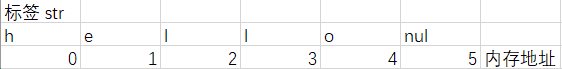
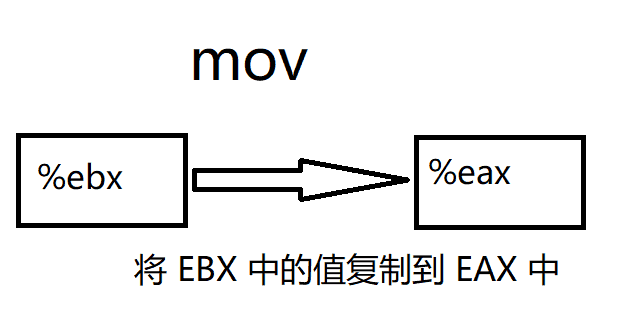
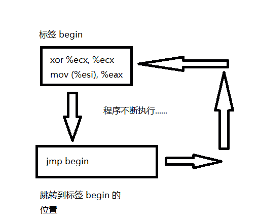
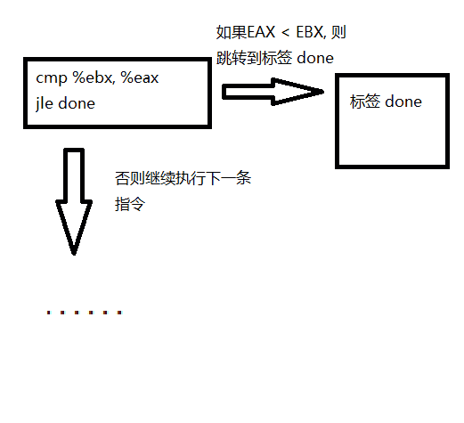
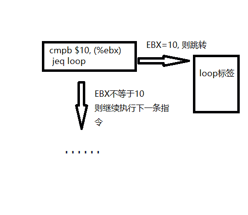
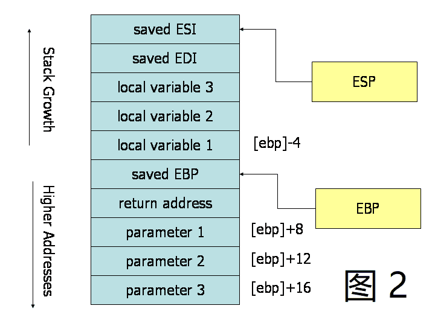
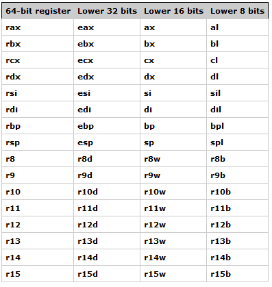

逆向工程与汇编语言
C 语言基础
从源代码到可执行文件
我们以经典著作《The C Programming Language》中的第一个程序 “Hello World” 为例，讲解 Linux 下 GCC 的编译过程。
#include <stdio.h>
main()
{
printf("hello, world\n");
}
$gcc hello.c
$./a.out
hello world
以上过程可分为4个步骤：预处理（Preprocessing）、编译（Compilation）、汇编（Assembly）和链接（Linking）。

预编译
gcc -E hello.c -o hello.i
# 1 "hello.c"
# 1 "<built-in>"
# 1 "<command-line>"
......
extern int printf (const char *__restrict __format, ...);
......
main() {
printf("hello, world\n");
}
预编译过程主要处理源代码中以 “#” 开始的预编译指令：
- 将所有的 “#define” 删除，并且展开所有的宏定义。
- 处理所有条件预编译指令，如 “#if”、“#ifdef”、“#elif”、“#else”、“#endif”。
- 处理 “#include” 预编译指令，将被包含的文件插入到该预编译指令的位置。注意，该过程递归执行。
- 删除所有注释。
- 添加行号和文件名标号。
- 保留所有的 #pragma 编译器指令。
编译
gcc -S hello.c -o hello.s
.file "hello.c"
.section .rodata
.LC0:
.string "hello, world"
.text
.globl main
.type main, @function
main:
.LFB0:
.cfi_startproc
pushq %rbp
.cfi_def_cfa_offset 16
.cfi_offset 6, -16
movq %rsp, %rbp
.cfi_def_cfa_register 6
leaq .LC0(%rip), %rdi
call puts@PLT
movl $0, %eax
popq %rbp
.cfi_def_cfa 7, 8
ret
.cfi_endproc
.LFE0:
.size main, .-main
.ident "GCC: (GNU) 7.2.0"
.section .note.GNU-stack,"",@progbits
编译过程就是把预处理完的文件进行一系列词法分析、语法分析、语义分析及优化后生成相应的汇编代码文件。
汇编
$ gcc -c hello.s -o hello.o
或者
$gcc -c hello.c -o hello.o
$ objdump -sd hello.o
hello.o: file format elf64-x86-64
Contents of section .text:
0000 554889e5 488d3d00 000000e8 00000000 UH..H.=.........
0010 b8000000 005dc3 .....].
Contents of section .rodata:
0000 68656c6c 6f2c2077 6f726c64 00 hello, world.
Contents of section .comment:
0000 00474343 3a202847 4e552920 372e322e .GCC: (GNU) 7.2.
0010 3000 0.
Contents of section .eh_frame:
0000 14000000 00000000 017a5200 01781001 .........zR..x..
0010 1b0c0708 90010000 1c000000 1c000000 ................
0020 00000000 17000000 00410e10 8602430d .........A....C.
0030 06520c07 08000000 .R......
Disassembly of section .text:
0000000000000000 <main>:
0: 55 push %rbp
1: 48 89 e5 mov %rsp,%rbp
4: 48 8d 3d 00 00 00 00 lea 0x0(%rip),%rdi # b <main+0xb>
b: e8 00 00 00 00 callq 10 <main+0x10>
10: b8 00 00 00 00 mov $0x0,%eax
15: 5d pop %rbp
16: c3 retq
汇编器将汇编代码转变成机器可以执行的指令。
链接
gcc hello.o -o hello
$ objdump -d -j .text hello
......
000000000000064a <main>:
64a: 55 push %rbp
64b: 48 89 e5 mov %rsp,%rbp
64e: 48 8d 3d 9f 00 00 00 lea 0x9f(%rip),%rdi # 6f4 <_IO_stdin_used+0x4>
655: e8 d6 fe ff ff callq 530 <puts@plt>
65a: b8 00 00 00 00 mov $0x0,%eax
65f: 5d pop %rbp
660: c3 retq
661: 66 2e 0f 1f 84 00 00 nopw %cs:0x0(%rax,%rax,1)
668: 00 00 00
66b: 0f 1f 44 00 00 nopl 0x0(%rax,%rax,1)
......
目标文件需要链接一大堆文件才能得到最终的可执行文件（上面只展示了链接后的 main 函数，可以和 hello.o 中的 main 函数作对比）。链接过程主要包括地址和空间分配（Address and Storage Allocation）、符号决议（Symbol Resolution）和重定向（Relocation）等。
gcc 技巧
通常在编译后只会生成一个可执行文件，而中间过程生成的 .i、.s、.o 文件都不会被保存。我们可以使用参数 -save-temps 永久保存这些临时的中间文件。
$ gcc -save-temps hello.c
$ ls
a.out hello.c hello.i hello.o hello.s
这里要注意的是，gcc 默认使用动态链接，所以这里生成的 a.out 实际上是共享目标文件。
$ file a.out
a.out: ELF 64-bit LSB shared object, x86-64, version 1 (SYSV), dynamically linked, interpreter /lib64/ld-linux-x86-64.so.2, for GNU/Linux 3.2.0, BuildID[sha1]=533aa4ca46d513b1276d14657ec41298cafd98b1, not stripped
使用参数 --verbose 可以输出 gcc 详细的工作流程。
gcc hello.c -static --verbose
东西很多，我们主要关注下面几条信息：
$ /usr/lib/gcc/x86_64-pc-linux-gnu/7.2.0/cc1 -quiet -v hello.c -quiet -dumpbase hello.c -mtune=generic -march=x86-64 -auxbase hello -version -o /tmp/ccj1jUMo.s
as -v --64 -o /tmp/ccAmXrfa.o /tmp/ccj1jUMo.s
/usr/lib/gcc/x86_64-pc-linux-gnu/7.2.0/collect2 -plugin /usr/lib/gcc/x86_64-pc-linux-gnu/7.2.0/liblto_plugin.so -plugin-opt=/usr/lib/gcc/x86_64-pc-linux-gnu/7.2.0/lto-wrapper -plugin-opt=-fresolution=/tmp/cc1l5oJV.res -plugin-opt=-pass-through=-lgcc -plugin-opt=-pass-through=-lgcc_eh -plugin-opt=-pass-through=-lc --build-id --hash-style=gnu -m elf_x86_64 -static /usr/lib/gcc/x86_64-pc-linux-gnu/7.2.0/../../../../lib/crt1.o /usr/lib/gcc/x86_64-pc-linux-gnu/7.2.0/../../../../lib/crti.o /usr/lib/gcc/x86_64-pc-linux-gnu/7.2.0/crtbeginT.o -L/usr/lib/gcc/x86_64-pc-linux-gnu/7.2.0 -L/usr/lib/gcc/x86_64-pc-linux-gnu/7.2.0/../../../../lib -L/lib/../lib -L/usr/lib/../lib -L/usr/lib/gcc/x86_64-pc-linux-gnu/7.2.0/../../.. /tmp/ccAmXrfa.o --start-group -lgcc -lgcc_eh -lc --end-group /usr/lib/gcc/x86_64-pc-linux-gnu/7.2.0/crtend.o /usr/lib/gcc/x86_64-pc-linux-gnu/7.2.0/../../../../lib/crtn.o
三条指令分别是 cc1、as 和 collect2，cc1 是 gcc 的编译器，将 .c 文件编译为 .s 文件，as 是汇编器命令，将 .s 文件汇编成 .o 文件，collect2 是链接器命令，它是对命令 ld 的封装。静态链接时，gcc 将 C 语言运行时库的 5 个重要目标文件 crt1.o、crti.o、crtbeginT.o、crtend.o、crtn.o 和 -lgcc、-lgcc_eh、-lc 表示的 3 个静态库链接到可执行文件中。
更多的内容我们会在 1.5.3 中专门对 ELF 文件进行讲解。
C 语言标准库
C 运行库（CRT）是一套庞大的代码库，以支撑程序能够正常地运行。其中 C 语言标准库占据了最主要地位。
常用的标准库文件头：
- 标准输入输出（stdio.h）
- 字符操作（ctype.h）
- 字符串操作（string.h）
- 数学函数（math.h）
- 实用程序库（stdlib.h）
- 时间／日期（time.h）
- 断言（assert.h）
- 各种类型上的常数（limits.h & float.h）
- 变长参数（stdarg.h）
- 非局部跳转（setjmp.h）
glibc 即 GNU C Library，是为 GNU 操作系统开发的一个 C 标准库。glibc 主要由两部分组成，一部分是头文件，位于 /usr/include；另一部分是库的二进制文件。二进制文件部分主要是 C 语言标准库，有动态和静态两个版本，动态版本位于 /lib/libc.so.6，静态版本位于 /usr/lib/libc.a。
在漏洞利用的过程中，通常我们通过计算目标函数地址相对于已知函数地址在同一个 libc 中的偏移，来获得目标函数的虚拟地址，这时我们需要让本地的 libc 版本和远程的 libc 版本相同，可以先泄露几个函数的地址，然后在 libcdb.com 中进行搜索来得到。
整数表示
默认情况下，C 语言中的数字是有符号数，下面我们声明一个有符号整数和无符号整数：
int var1 = 0;
unsigned int var2 = 0;
- 有符号整数
- 可以表示为正数或负数
int的范围：-2,147,483,648 ~ 2,147,483,647- 无符号整数
- 只能表示为零或正数
unsigned int的范围：0 ~ 4,294,967,295
signed 或者 unsigned 取决于整数类型是否可以携带标志 +/-：
- Signed
- int
- signed int
- long
- Unsigned
- unit
- unsigned int
- unsigned long
在 signed int 中，二进制最高位被称作符号位，符号位被设置为 1 时，表示值为负，当设置为 0 时，值为非负：
- 0x7FFFFFFF = 2147493647
- 01111111111111111111111111111111
- 0x80000000 = -2147483647
- 10000000000000000000000000000000
- 0xFFFFFFFF = -1
- 11111111111111111111111111111111
二进制补码以一种适合于二进制加法器的方式来表示负数，当一个二进制补码形式表示的负数和与它的绝对值相等的正数相加时，结果为 0。首先以二进制方式写出正数，然后对所有位取反，最后加 1 就可以得到该数的二进制补码：
eg: 0x00123456
= 1193046
= 00000000000100100011010001010110
~= 11111111111011011100101110101001
+= 11111111111011011100101110101010
= -1193046 (0xFFEDCBAA)
编译器需要根据变量类型信息编译成相应的指令：
- 有符号指令
- IDIV：带符号除法指令
- IMUL：带符号乘法指令
- SAL：算术左移指令（保留符号）
- SAR：右移右移指令（保留符号）
- MOVSX：带符号扩展传送指令
- JL：当小于时跳转指令
- JLE：当小于或等于时跳转指令
- JG：当大于时跳转指令
- JGE：当大于或等于时跳转指令
- 无符号指令
- DIV：除法指令
- MUL：乘法指令
- SHL：逻辑左移指令
- SHR：逻辑右移指令
- MOVZX：无符号扩展传送指令
- JB：当小于时跳转指令
- JBE：当小于或等于时跳转指令
- JA：当大于时跳转指令
- JAE：当大于或等于时跳转指令
32 位机器上的整型数据类型，不同的系统可能会有不同：
| C 数据类型 | 最小值 | 最大值 | 最小大小 |
|---|---|---|---|
| char | -128 | 127 | 8 bits |
| short | -32 768 | 32 767 | 16 bits |
| int | -2 147 483 648 | 2 147 483 647 | 16 bits |
| long | -2 147 483 648 | 2 147 483 647 | 32 bits |
| long long | -9 223 372 036 854 775 808 | 9 223 372 036 854 775 807 | 64 bits |
固定大小的数据类型：
-
int [# of bits]_t -
int8_t, int16_t, int32_t
-
uint[# of bits]_t -
uint8_t, uint16_t, uint32_t
-
有符号整数
-

-
无符号整数
-

更多信息在 stdint.h 和 limits.h 中：
man stdint.h
cat /usr/include/stdint.h
man limits.h
cat /usr/include/limits.h
了解整数的符号和大小是很有用的，在后面的相关章节中我们会介绍整数溢出的内容。
格式化输出函数
C 标准中定义了下面的格式化输出函数（参考 man ３ printf）：
#include <stdio.h>
int printf(const char *format, ...);
int fprintf(FILE *stream, const char *format, ...);
int dprintf(int fd, const char *format, ...);
int sprintf(char *str, const char *format, ...);
int snprintf(char *str, size_t size, const char *format, ...);
#include <stdarg.h>
int vprintf(const char *format, va_list ap);
int vfprintf(FILE *stream, const char *format, va_list ap);
int vdprintf(int fd, const char *format, va_list ap);
int vsprintf(char *str, const char *format, va_list ap);
int vsnprintf(char *str, size_t size, const char *format, va_list ap);
fprintf()按照格式字符串的内容将输出写入流中。三个参数为流、格式字符串和变参列表。printf()等同于fprintf()，但是它假定输出流为stdout。sprintf()等同于fprintf()，但是输出不是写入流而是写入数组。在写入的字符串末尾必须添加一个空字符。snprintf()等同于sprintf()，但是它指定了可写入字符的最大值size。当size大于零时，输出字符超过第size-1的部分会被舍弃而不会写入数组中，在写入数组的字符串末尾会添加一个空字符。dprintf()等同于fprintf()，但是它输出不是流而是一个文件描述符fd。vfprintf()、vprintf()、vsprintf()、vsnprintf()、vdprintf()分别与上面的函数对应，只是它们将变参列表换成了va_list类型的参数。
格式字符串
格式字符串是由普通字符（ordinary character）（包括 %）和转换规则（conversion specification）构成的字符序列。普通字符被原封不动地复制到输出流中。转换规则根据与实参对应的转换指示符对其进行转换，然后将结果写入输出流中。
一个转换规则有可选部分和必需部分组成：
%[ 参数 ][ 标志 ][ 宽度 ][ .精度 ][ 长度 ] 转换指示符
- （必需）转换指示符
| 字符 | 描述 |
|---|---|
d, i |
有符号十进制数值 int。'%d' 与 '%i' 对于输出是同义；但对于 scanf() 输入二者不同，其中 %i 在输入值有前缀 0x 或 0 时，分别表示 16 进制或 8 进制的值。如果指定了精度，则输出的数字不足时在左侧补 0。默认精度为 1。精度为 0 且值为 0，则输出为空 |
u |
十进制 unsigned int。如果指定了精度，则输出的数字不足时在左侧补 0。默认精度为 1。精度为 0 且值为 0，则输出为空 |
f, F |
double 型输出 10 进制定点表示。'f' 与 'F' 差异是表示无穷与 NaN 时，'f' 输出 'inf', 'infinity' 与 'nan'；'F' 输出 'INF', 'INFINITY' 与 'NAN'。小数点后的数字位数等于精度，最后一位数字四舍五入。精度默认为 6。如果精度为 0 且没有 # 标记，则不出现小数点。小数点左侧至少一位数字 |
e, E |
double 值，输出形式为 10 进制的([-]d.ddd e[+/-]ddd). E 版本使用的指数符号为 E（而不是e）。指数部分至少包含 2 位数字，如果值为 0，则指数部分为 00。Windows 系统，指数部分至少为 3 位数字，例如 1.5e002，也可用 Microsoft 版的运行时函数 _set_output_format 修改。小数点前存在 1 位数字。小数点后的数字位数等于精度。精度默认为 6。如果精度为 0 且没有 # 标记，则不出现小数点 |
g, G |
double 型数值，精度定义为全部有效数字位数。当指数部分在闭区间 [-4,精度] 内，输出为定点形式；否则输出为指数浮点形式。'g' 使用小写字母，'G' 使用大写字母。小数点右侧的尾数 0 不被显示；显示小数点仅当输出的小数部分不为 0 |
x, X |
16 进制 unsigned int。'x' 使用小写字母；'X' 使用大写字母。如果指定了精度，则输出的数字不足时在左侧补 0。默认精度为 1。精度为 0 且值为 0，则输出为空 |
o |
8 进制 unsigned int。如果指定了精度，则输出的数字不足时在左侧补 0。默认精度为 1。精度为 0 且值为 0，则输出为空 |
s |
如果没有用 l 标志，输出 null 结尾字符串直到精度规定的上限；如果没有指定精度，则输出所有字节。如果用了 l 标志，则对应函数参数指向 wchar_t 型的数组，输出时把每个宽字符转化为多字节字符，相当于调用 wcrtomb 函数 |
c |
如果没有用 l 标志，把 int 参数转为 unsigned char 型输出；如果用了 l 标志，把 wint_t 参数转为包含两个元素的 wchart_t 数组，其中第一个元素包含要输出的字符，第二个元素为 null 宽字符 |
p |
void * 型，输出对应变量的值。printf("%p", a) 用地址的格式打印变量 a 的值，printf("%p", &a) 打印变量 a 所在的地址 |
a, A |
double 型的 16 进制表示，"[−]0xh.hhhh p±d"。其中指数部分为 10 进制表示的形式。例如：1025.010 输出为 0x1.004000p+10。'a' 使用小写字母，'A' 使用大写字母 |
n |
不输出字符，但是把已经成功输出的字符个数写入对应的整型指针参数所指的变量 |
% |
'%' 字面值，不接受任何除了 参数 以外的部分 |
- （可选）参数
| 字符 | 描述 |
|---|---|
n$ |
n 是用这个格式说明符显示第几个参数；这使得参数可以输出多次，使用多个格式说明符，以不同的顺序输出。如果任意一个占位符使用了 参数，则其他所有占位符必须也使用 参数。例：printf("%2$d %2$#x; %1$d %1$#x",16,17) 产生 "17 0x11; 16 0x10" |
- （可选）标志
| 字符 | 描述 |
|---|---|
+ |
总是表示有符号数值的 '+' 或 '-' 号，缺省情况是忽略正数的符号。仅适用于数值类型 |
| 空格 | 使得有符号数的输出如果没有正负号或者输出 0 个字符，则前缀 1 个空格。如果空格与 '+' 同时出现，则空格说明符被忽略 |
- |
左对齐。缺省情况是右对齐 |
# |
对于 'g' 与 'G'，不删除尾部 0 以表示精度。对于 'f', 'F', 'e', 'E', 'g', 'G', 总是输出小数点。对于 'o', 'x', 'X', 在非 0 数值前分别输出前缀 0, 0x 和 0X表示数制 |
0 |
如果 宽度 选项前缀为 0，则在左侧用 0 填充直至达到宽度要求。例如 printf("%2d", 3) 输出 "3"，而 printf("%02d", 3) 输出 "03"。如果 0 与 - 均出现，则 0 被忽略，即左对齐依然用空格填充 |
- （可选）宽度
是一个用来指定输出字符的最小个数的十进制非负整数。如果实际位数多于定义的宽度,则按实际位数输出；如果实际位数少于定义的宽度则补以空格或 0。
- （可选）精度
精度是用来指示打印字符个数、小数位数或者有效数字个数的非负十进制整数。对于 d、i、u、x、o 的整型数值，是指最小数字位数，不足的位要在左侧补 0，如果超过也不截断，缺省值为 1。对于 a, A, e, E, f, F 的浮点数值，是指小数点右边显示的数字位数，必要时四舍五入；缺省值为 6。对于 g, G 的浮点数值，是指有效数字的最大位数。对于 s 的字符串类型，是指输出的字节的上限，超出限制的其它字符将被截断。如果域宽为 *，则由对应的函数参数的值为当前域宽。如果仅给出了小数点，则域宽为 0。
- （可选）长度
| 字符 | 描述 |
|---|---|
hh |
对于整数类型，printf 期待一个从 char 提升的 int 整型参数 |
h |
对于整数类型，printf 期待一个从 short 提升的 int 整型参数 |
l |
对于整数类型，printf 期待一个 long 整型参数。对于浮点类型，printf 期待一个 double 整型参数。对于字符串 s 类型，printf 期待一个 wchar_t 指针参数。对于字符 c 类型，printf 期待一个 wint_t 型的参数 |
ll |
对于整数类型，printf 期待一个 long long 整型参数。Microsoft 也可以使用 I64 |
L |
对于浮点类型，printf 期待一个 long double 整型参数 |
z |
对于整数类型，printf 期待一个 size_t 整型参数 |
j |
对于整数类型，printf 期待一个 intmax_t 整型参数 |
t |
对于整数类型，printf 期待一个 ptrdiff_t 整型参数 |
例子
printf("Hello %%"); // "Hello %"
printf("Hello World!"); // "Hello World!"
printf("Number: %d", 123); // "Number: 123"
printf("%s %s", "Format", "Strings"); // "Format Strings"
printf("%12c", 'A'); // " A"
printf("%16s", "Hello"); // " Hello!"
int n;
printf("%12c%n", 'A', &n); // n = 12
printf("%16s%n", "Hello!", &n); // n = 16
printf("%2$s %1$s", "Format", "Strings"); // "Strings Format"
printf("%42c%1$n", &n); // 首先输出41个空格，然后输出 n 的低八位地址作为一个字符
这里我们对格式化输出函数和格式字符串有了一个详细的认识，后面的章节中我们会介绍格式化字符串漏洞的内容。
汇编语言
- 汇编语言
- 3.3 X86 汇编基础
- 3.3.2 寄存器 Registers
- 3.3.3 内存和寻址模式 Memory and Addressing Modes
- 3.3.3.1 声明静态数据区域
- 3.3.3.2 内存寻址
- 3.3.3.3 操作后缀
- 3.3.4 指令 Instructions
- 3.3.4.1 数据移动指令
- 3.3.4.2 逻辑运算指令
- 3.3.4.3 流程控制指令
- 3.3.5 调用约定 Calling Convention
- 3.3.5.1 调用者约定 Caller Rules
- 3.3.5.2 被调用者约定 Callee Rules
- 3.4 x64 汇编基础
- 3.4.1 导语
- 3.4.2 寄存器 Registers
- 3.4.3 寻址模式 Addressing modes
- 3.4.4 通用指令 Common instructions
mov和lea指令- 算术和位运算
- 流程控制指令
setx和movx- 函数调用与栈
- 3.4.5 汇编和 gdb
- 3.5 ARM汇编基础
- 3.6 MIPS汇编基础
3.3 X86 汇编基础
3.3.2 寄存器 Registers
现代 ( 386及以上的机器 )x86 处理器有 8 个 32 位通用寄存器, 如图 1 所示. 
这些寄存器的名字都是有点历史的, 例如 EAX 过去被称为 累加器, 因为它被用来作很多算术运算, 还有 ECX 被称为 计数器 , 因为它被用来保存循环的索引 ( 就是循环次数 ). 尽管大多是寄存器在现代指令集中已经失去了它们的特殊用途, 但是按照惯例, 其中有两个寄存器还是有它们的特殊用途 ---ESP 和 EBP.
对于 EAS, EBX, ECX 还有 EDX 寄存器, 它们可以被分段开来使用. 例如, 可以将 EAX 的最低的 2 位字节视为 16 位寄存器 ( AX ). 还可以将 AX 的最低位的 1 个字节看成 8 位寄存器来用 ( AL ), 当然 AX 的高位的 1 个字节也可以看成是一个 8 位寄存器 ( AH ). 这些名称有它们相对应的物理寄存器. 当两个字节大小的数据被放到 DX 的时候, 原本 DH, DL 和 EDX 的数据会受到影响 ( 被覆盖之类的 ). 这些 " 子寄存器 " 主要来自于比较久远的 16 位版本指令集. 然而, 姜还是老的辣, 在处理小于 32 位的数据的时候, 比如 1 个字节的 ASCII 字符, 它们有时会很方便.
3.3.3 内存和寻址模式 Memory and Addressing Modes
3.3.3.1 声明静态数据区域
你可以用特殊的 x86 汇编指令在内存中声明静态数据区域 ( 类似于全局变量 ). .data指令用来声明数据. 根据这条指令, .byte, .short 和 .long 可以分别用来声明 1 个字节, 2 个字节和 4 个字节的数据. 我们可以给它们打个标签, 用来引用创建的数据的地址. 标签在汇编语言中是非常有用的, 它们给内存地址命名, 然后编译器 和链接器 将其 " 翻译 " 成计算机理解的机器代码. 这个跟用名称来声明变量很类似, 但是它遵守一些较低级别的规则. 例如, 按顺序声明的位置将彼此相邻地存储在内存中. 这话也许有点绕, 就是按照顺序打的标签, 这些标签对应的数据也会按照顺序被放到内存中.
一些例子 :
.data
var :
.byte 64 ;声明一个字节型变量 var, 其所对应的数据是64
.byte 10 ;声明一个数据 10, 这个数据没有所谓的 " 标签 ", 它的内存地址就是 var+1.
x :
.short 42 ;声明一个大小为 2 个字节的数据, 这个数据有个标签 " x "
y :
.long 30000 ;声明一个大小为 4 个字节的数据, 这个数据标签是 " y ", y 的值被初始化为 30000
与高级语言不同, 高级语言的数组可以具有多个维度并且可以通过索引来访问, x86 汇编语言的数组只是在内存中连续的" 单元格 ". 你只需要把数值列出来就可以声明一个数组, 比如下面的第一个例子. 对于一些字节型数组的特殊情况, 我们可以使用字符串. 如果要在大多数的内存填充 0, 你可以使用.zero指令.
例子 :
s :
.long 1, 2, 3 ;声明 3 个大小为 4 字节的数据 1, 2, 3. 内存中 s+8 这个标签所对应的数据就是 3.
barr:
.zero 10 ;从 barr 这个标签的位置开始, 声明 10 个字节的数据, 这些数据被初始化为 0.
str :
.string "hello" ;从 str 这个标签的位置开始, 声明 6 个字节的数据, 即 hello 对应的 ASCII 值, 这最后还跟有一个 nul(0) 字节.

3.3.3.2 内存寻址
现代x86兼容处理器能够寻址高达 2^32 字节的内存 : 内存地址为 32 位宽. 在上面的示例中，我们使用标签来引用内存区域，这些标签实际上被 32 位数据的汇编程序替换，这些数据指定了内存中的地址. 除了支持通过标签（即常数值）引用存储区域之外，x86提供了一种灵活的计算和引用内存地址的方案 ：最多可将两个32位寄存器和一个32位有符号常量相加，以计算存储器地址. 其中一个寄存器可以选择预先乘以 2, 4 或 8.
寻址模式可以和许多 x86 指令一起使用 ( 我们将在下一节对它们进行讲解 ). 这里我们用mov指令在寄存器和内存中移动数据当作例子. 这个指令有两个参数, 第一个是数据的来源, 第二个是数据的去向.
一些mov的例子 :
mov (%ebx), %eax ;从 EBX 中的内存地址加载 4 个字节的数据到 EAX, 就是把 EBX 中的内容当作标签, 这个标签在内存中对应的数据放到 EAX 中
;后面如果没有说明的话, (%ebx)就表示寄存器ebx中存储的内容
mov %ebx, var(,1) ; 将 EBX 中的 4 个字节大小的数据移动的内存中标签为 var 的地方去.( var 是一个 32 位常数).
mov (%esi, %ebx, 4), %edx ;将内存中标签为 ESI+4*EBX 所对应的 4 个字节大小的数据移动到 EDX中.
一些错误的例子:
mov (%ebx, %ecx, -1), %eax ;这个只能把寄存器中的值加上一遍.
mov %ebx,(%eax, %esi, %edi, 1) ;在地址计算中, 最多只能出现 2 个寄存器, 这里却有 3 个寄存器.
3.3.3.3 操作后缀
通常, 给定内存地址的数据类型可以从引用它的汇编指令推断出来. 例如, 在上面的指令中, 你可以从寄存器操作数的大小来推出其所占的内存大小. 当我们加载一个 32 位的寄存器的时候, 编译器就可以推断出我们用到的内存大小是 4 个字节宽. 当我们将 1 个字节宽的寄存器的值保存到内存中时, 编译器可以推断出我们想要在内存中弄个 1 字节大小的 " 坑 " 来保存我们的数据.
然而在某些情况下, 我们用到的内存中 " 坑 " 的大小是不明确的. 比如说这条指令 mov $2,(%ebx). 这条指令是否应该将 " 2 " 这个值移动到 EBX 中的值所代表的地址 " 坑 " 的单个字节中 ? 也许它表示的是将 32 位整数表示的 2 移动到从地址 EBX 开始的 4 字节. 既然这两个解释都有道理, 但计算机汇编程序必须明确哪个解释才是正确的, 计算机很单纯的, 要么是错的要么是对的. 前缀 b, w, 和 l 就是来解决这个问题的, 它们分别表示 1, 2 和 4 个字节的大小.
举几个例子 :
movb $2, (%ebx) ;将 2 移入到 ebx 中的值所表示的地址单元中.
movw $2, (%ebx) ;将 16 位整数 2 移动到 从 ebx 中的值所表示的地址单元 开始的 2 个字节中;这话有点绕, 所以我故意在里面加了点空格, 方便大家理解.
movl $2,(%ebx) ;将 32 位整数 2 移动到 从 ebx中的值表示的地址单元 开始的 4 个字节中.
3.3.4 指令 Instructions
机器指令通常分为 3 类 : 数据移动指令, 逻辑运算指令和流程控制指令. 在本节中, 我们将讲解每一种类型的 x86 指令以及它们的重要示例. 当然, 我们不可能把 x86 所有指令讲得特别详细, 毕竟篇幅和水平有限. 完整的指令列表, 请参阅 intel 的指令集参考手册.
我们将使用以下符号 :
<reg32 任意的 32 位寄存器 (%eax, %ebx, %ecx, %edx, %esi, %edi, %esp 或者 %eb)
<reg16 任意的 16 位寄存器 (%ax, %bx, %cx 或者 %dx)
<reg8 任意的 8 位寄存器 (%ah, %al, %bh, %bl, %ch, %cl, %dh, %dl)
<reg 任意的寄存器
<mem 一个内存地址, 例如 (%eax), 4+var, (%eax, %ebx, 1)
<con32 32 位常数
<con16 16 位常数
<con8 8 位常数
<con 任意 32位, 16 位或者 8 位常数
在汇编语言中, 用作立即操作数 的所有标签和数字常量 ( 即不在诸如3 (%eax, %ebx, 8)这样的地址计算中 ) 总是以美元符号 $ 为前缀. 需要的时候, 前缀 0x 表示十六进制数, 例如$ 0xABC. 如果没有前缀, 则默认该数字为十进制数.
3.3.4.1 数据移动指令
mov移动
mov 指令将数据从它的第一个参数 ( 即寄存器中的内容, 内存单元中的内容, 或者一个常数值 ) 复制到它的第二个参数 ( 即寄存器或者内存单元 ). 当寄存器到寄存器之间的数据移动是可行的时候, 直接地从内存单元中将数据移动到另一内存单元中是不行的. 在这种需要在内存单元中传递数据的情况下, 它数据来源的那个内存单元必须首先把那个内存单元中的数据加载到一个寄存器中, 然后才可以通过这个寄存器来把数据移动到目标内存单元中.
- 语法
mov <reg, <reg
mov <reg, <mem
mov <mem, <reg
mov <con, <reg
mov <con, <mem
- 例子
mov %ebx, %eax ;将 EBX 中的值复制到 EAX 中
mov $5, var(,1) ;将数字 5 存到字节型内存单元 " var "

push入栈
push指令将它的参数移动到硬件支持的栈内存顶端. 特别地, push 首先将 ESP 中的值减少 4, 然后将它的参数移动到一个 32 位的地址单元 ( %esp ). ESP ( 栈指针 ) 会随着不断入栈从而持续递减, 即栈内存是从高地址单元到低地址单元增长.
- 语法
push <reg32
push <mem
push <con32
- 例子
push %eax ;将 EAX 送入栈
push var(,1) ;将 var 对应的 4 字节大小的数据送入栈中
pop出栈
pop指令从硬件支持的栈内存顶端移除 4 字节的数据, 并把这个数据放到该指令指定的参数中 ( 即寄存器或者内存单元 ). 其首先将内存中 ( %esp ) 的 4 字节数据放到指定的寄存器或者内存单元中, 然后让 ESP + 4.
- 语法
pop <reg32
pop <mem
- 例子
pop %edi ;将栈顶的元素移除, 并放入到寄存器 EDI 中.
pop (%ebx) ;将栈顶的元素移除, 并放入从 EBX 开始的 4 个字节大小的内存单元中.
重点内容 : 栈 栈是一种特殊的存储空间, 特殊在它的访问形式上, 它的访问形式就是最后进入这个空间的数据, 最先出去, 也就是 "先进后出, 后进先出".
lea加载有效地址
lea指令将其第一个参数指定的内存单元 放入到 第二个参数指定的寄存器中. 注意, 该指令不加载内存单元中的内容, 只是计算有效地址并将其放入寄存器. 这对于获得指向存储器区域的指针或者执行简单的算术运算非常有用.
也许这里你会看得一头雾水, 不过你不必担心, 这里有更为通俗易懂的解释. 汇编语言中 lea 指令和 mov 指令的区别 ? MOV 指令的功能是传送数据，例如 MOV AX,[1000H]，作用是将 1000H 作为偏移地址，寻址找到内存单元，将该内存单元中的数据送至 AX； LEA 指令的功能是取偏移地址，例如 LEA AX,[1000H]，作用是将源操作数 [1000H] 的偏移地址 1000H 送至 AX。理解时，可直接将[ ]去掉，等同于 MOV AX,1000H。 再如：LEA BX,[AX]，等同于 MOV BX,AX；LEA BX,TABLE 等同于 MOV BX,OFFSET TABLE。 但有时不能直接使用 MOV 代替： 比如：LEA AX,[SI+6] 不能直接替换成：MOV AX,SI+6；但可替换为： MOV AX,SI ADD AX,6 两步完成。
- 语法
lea <mem, <reg32
- 例子
lea (%ebx,%esi,8), %edi ;EBX+8*ESI 的值被移入到了 EDI
lea val(,1), %eax ;val 的值被移入到了 EAX
3.3.4.2 逻辑运算指令
add整数相加
add 指令将两个参数相加, 然后将结果存放到第二个参数中. 注意, 参数可以是寄存器,但参数中最多只有一个内存单元. 这话有点绕, 我们直接看语法 :
- 语法
add <reg, <reg
add <mem, <reg
add <reg, <mem
add <con, <reg
add <con, <mem
- 例子
add $10, %eax ;EAX 中的值被设置为了 EAX+10.
addb $10, (%eax) ;往 EAX 中的值 所代表的内存单元地址 加上 1 个字节的数字 10.
sub整数相减
sub指令将第二个参数的值与第一个相减, 就是后面那个减去前面那个, 然后把结果存储到第二个参数. 和add一样, 两个参数都可以是寄存器, 但两个参数中最多只能有一个是内存单元.
- 语法
sub <reg, <reg
sub <mem, <reg
sub <con, <reg
sub <con, <mem
- 例子
sub %ah, %al ;AL 被设置成 AL-AH
sub $216, %eax ;将 EAX 中的值减去 216
inc, dec自增, 自减
inc 指令让它的参数加 1, dec 指令则是让它的参数减去 1.
- 语法
inc <reg
inc <mem
dec <reg
dec <mem
- 例子
dec %eax ;EAX 中的值减去 1
incl var(,1) ;将 var 所代表的 32 位整数加上 1.
imul整数相乘
imul 指令有两种基本格式 : 第一种是 2 个参数的 ( 看下面语法开始两条 ); 第二种格式是 3 个参数的 ( 看下面语法最后两条 ).
2 个参数的这种格式, 先是将两个参数相乘, 然后把结果存到第二个参数中. 运算结果 ( 即第二个参数 ) 必须是一个寄存器.
3 个参数的这种格式, 先是将它的第 1 个参数和第 2 个参数相乘, 然后把结果存到第 3 个参数中, 当然, 第 3 个参数必须是一个寄存器. 此外, 第 1 个参数必须是一个常数.
- 语法
imul <reg32, <reg32
imul <mem, <reg32
imul <con, <reg32, <reg32
imul <con, <mem, <reg32
- 例子
imul (%ebx), %eax ;将 EAX 中的 32 位整数, 与 EBX 中的内容所指的内存单元, 相乘, 然后把结果存到 EAX 中.
imul $25, %edi, %esi ;ESI 被设置为 EDI * 25.
idiv整数相除
idiv只有一个操作数，此操作数为除数，而被除数则为 EDX : EAX 中的内容（一个64位的整数）， 除法结果 ( 商 ) 存在 EAX 中, 而所得的余数存在 EDX 中.
- 语法
idiv <reg32
idiv <mem
- 例子
idiv %ebx ;用 EDX : EAX 的值除以 EBX 的值. 商存放在 EAX 中, 余数存放在 EDX 中.
idivw (%ebx) ;将 EDX : EAX 的值除以存储在 EBX 所对应内存单元的 32 位值. 商存放在 EAX 中, 余数存放在 EDX 中.
and, or, xor按位逻辑 与, 或, 异或 运算
这些指令分别对它们的参数进行相应的逻辑运算, 运算结果存到第一个参数中.
- 语法
and <reg, <reg
and <mem, <reg
and <reg, <mem
and <con, <reg
and <con, <mem
or <reg, <reg
or <mem, <reg
or <reg, <mem
or <con, <reg
or <con, <mem
xor <reg, <reg
xor <mem, <reg
xor <reg, <mem
xor <con, <reg
xor <con, <mem
- 例子
and $0x0F, %eax ;只留下 EAX 中最后 4 位数字 (二进制位)
xor %edx, %edx ;将 EDX 的值全部设置成 0
not逻辑位运算 非
对参数进行逻辑非运算, 即翻转参数中所有位的值.
- 语法
not <reg
not <mem
- 例子
not %eax ;将 EAX 的所有值翻转.
neg取负指令
取参数的二进制补码负数. 直接看例子也许会更好懂.
- 语法
neg <reg
neg <mem
- 例子
neg %eax ;EAX → -EAX
shl, shr按位左移或者右移
这两个指令对第一个参数进行位运算, 移动的位数由第二个参数决定, 移动过后的空位拿 0 补上.被移的参数最多可以被移 31 位. 第二个参数可以是 8 位常数或者寄存器 CL. 在任意情况下, 大于 31 的移位都默认是与 32 取模.
- 语法
shl <con8, <reg
shl <con8, <mem
shl %cl, <reg
shl %cl, <mem
shr <con8, <reg
shr <con8, <mem
shr %cl, <reg
shr %cl, <mem
- 例子
shl $1, %eax ;将 EAX 的值乘以 2 (如果最高有效位是 0 的话)
shr %cl, %ebx ;将 EBX 的值除以 2n, 其中 n 为 CL 中的值, 运算最终结果存到 EBX 中.
你也许会想, 明明只是把数字二进制移了 1 位, 结果却是等于这个数字乘以 2.什么情况 ? 这几个位运算的结果和计算机表示数字的原理有关,请看本章附录的计算机数字表示.
3.3.4.3 流程控制指令
x86 处理器有一个指令指针寄存器 ( EIP ), 该寄存器为 32 位寄存器, 它用来在内存中指示我们输入汇编指令的位置. 就是说这个寄存器指向哪个内存单元, 那个单元存储的机器码就是程序执行的指令. 通常它是指向我们程序要执行的 下一条指令. 但是你不能直接操作 EIP 寄存器, 你需要流程控制指令来隐式地给它赋值.
我们使用符号 <label 来当作程序中的标签. 通过输入标签名称后跟冒号, 可以将标签插入 x86 汇编代码文本中的任何位置. 例如 :
mov 8(%ebp), %esi
begin:
xor %ecx, %ecx
mov (%esi), %eax
该代码片段中的第二段被套上了 " begin " 这个标签. 在代码的其它地方, 我们可以用 " begin " 这个标签从而更方便地来引用这段指令在内存中的位置. 这个标签只是用来更方便地表示位置的, 它并不是用来代表某个 32 位值.
jmp跳转指令
将程序跳转到参数指定的内存地址, 然后执行该内存地址的指令.
- 语法
jmp <label
- 例子
jmp begin ;跳转到打了 " begin " 这个标签的地方

jcondition有条件的跳转
这些指令是条件跳转指令, 它们基于一组条件代码的状态, 这些条件代码的状态存放在称为机器状态字 ( machine status word ) 的特殊寄存器中. 机器状态字的内容包括关于最后执行的算术运算的信息. 例如, 这个字的一个位表示最后的结果是否为 0. 另一个位表示最后结果是否为负数. 基于这些条件代码, 可以执行许多条件跳转. 例如, 如果最后一次算术运算结果为 0, 则 jz 指令就是跳转到指定参数标签. 否则, 程序就按照流程进入下一条指令.
许多条件分支的名称都是很直观的, 这些指令的运行, 都和一个特殊的比较指令有关, cmp( 见下文 ). 例如, 像 jle 和 jne 这种指令, 它们首先对参数进行 cmp 操作.
- 语法
je <label ;当相等的时候跳转
jne <label ;当不相等的时候跳转
jz <label ;当最后结果为 0 的时候跳转
jg <label ;当大于的时候跳转
jge <label ;当大于等于的时候跳转
jl <label ;当小于的时候跳转
jle <label ;当小于等于的时候跳转
- 例子
cmp %ebx, %eax
jle done
;如果 EAX 的值小于等于 EBX 的值, 就跳转到 " done " 标签, 否则就继续执行下一条指令.

cmp比较指令
比较两个参数的值, 适当地设置机器状态字中的条件代码. 此指令与sub指令类似，但是cmp不用将计算结果保存在操作数中.
- 语法
cmp <reg, <reg
cmp <mem, <reg
cmp <reg, <mem
cmp <con, <reg
- 例子
cmpb $10, (%ebx)
jeq loop
;如果 EBX 的值等于整数常量 10, 则跳转到标签 " loop " 的位置.

call, ret子程序调用与返回
这两个指令实现子程序的调用和返回. call 指令首先将当前代码位置推到内存中硬件支持的栈内存上 ( 请看 push 指令 ), 然后无条件跳转到标签参数指定的代码位置. 与简单的 jmp 指令不同, call 指令保存了子程序完成时返回的位置. 就是 call 指令结束后, 返回到调用之前的地址.
ret 指令实现子程序的返回. 该指令首先从栈中取出代码 ( 类似于 pop 指令 ). 然后它无条件跳转到检索到的代码位置.
- 语法
call <label
ret
3.3.5 调用约定 Calling Convention
为了方便不同的程序员去分享代码和运行库, 并简化一般子程序的使用, 程序员们通常会遵守一定的约定 ( Calling Convention ). 调用约定是关于如何从例程调用和返回的协议. 例如，给定一组调用约定规则，程序员不需要检查子例程的定义来确定如何将参数传递给该子例程. 此外，给定一组调用约定规则，可以使高级语言编译器遵循规则，从而允许手动编码的汇编语言例程和高级语言例程相互调用.
我们将讲解被广泛使用的 C 语言调用约定. 遵循此约定将允许您编写可从 C ( 和C ++ ) 代码安全地调用的汇编语言子例程, 并且还允许您从汇编语言代码调用 C 函数库.
C 调用约定很大程度上取决于使用硬件支持的栈内存. 它基于 push, pop, call 和 ret 指令. 子程序的参数在栈上传递. 寄存器保存在栈中, 子程序使用的局部变量放在栈中. 在大多数处理器上实现的高级过程语言都使用了类似的调用约定.
调用约定分为两组. 第一组规则是面向子例程的调用者 ( Caller ) 的, 第二组规则面向子例程的编写者, 即被调用者 ( Callee ). 应该强调的是, 错误地遵守这些规则会导致程序的致命错误, 因为栈将处于不一致的状态; 因此, 在你自己的子例程中实现调用约定的时候, 务必当心.

将调用约定可视化的一种好方法是, 在子例程执行期间画一个栈内存附近的图. 图 2 描绘了在执行具有三个参数和三个局部变量的子程序期间栈的内容. 栈中描绘的单元都是 32 位内存单元, 因此这些单元的内存地址相隔 4 个字节. 第一个参数位于距基指针 8 个字节的偏移处. 在栈参数的上方 ( 和基指针下方 ), call 指令在这放了返回地址, 从而导致从基指针到第一个参数有额外 4 个字节的偏移量. 当 ret 指令用于从子程序返回时, 它将跳转到栈中的返回地址.
3.3.5.1 调用者约定 Caller Rules
要进行子程序调用, 调用者应该 :
- 在调用子例程之前, 调用者应该保存指定调用者保存 ( Caller-saved )的某些寄存器的内容. 调用者保存的寄存器是 EAX, ECX, EDX. 由于被调用的子程序可以修改这些寄存器, 所以如果调用者在子例程返回后依赖这些寄存器的值, 调用者必须将这些寄存器的值入栈, 然后就可以在子例程返回后恢复它们.
- 要把参数传递给子例程, 你可以在调用之前把参数入栈. 参数的入栈顺序应该是反着的, 就是最后一个参数应该最先入栈. 随着栈内存地址增大, 第一个参数将存储在最低的地址, 在历史上, 这种参数的反转用于允许函数传递可变数量的参数.
- 要调用子例程, 请使用
call指令. 该指令将返回地址存到栈上, 并跳转到子程序的代码. 这个会调用子程序, 这个子程序应该遵循下面的被调用者约定.
子程序返回后 ( 紧跟调用指令后 ), 调用者可以期望在寄存器 EAX 中找到子例程的返回值. 要恢复机器状态 ( machine state ), 调用者应该 :
- 从栈中删除参数, 这会把栈恢复到调用之前的状态.
- 把 EAX, ECX, EDX 之前入栈的内容给出栈, 调用者可以假设子例程没有修改其它寄存器.
- 例子
下面的代码就是个活生生的例子, 它展示了遵循约定的函数调用. 调用者正在调用一个带有 3 个整数参数的函数 myFunc. 第一个参数是 EAX, 第二个参数是常数 216; 第三个参数位于 EBX 的值所代表的内存地址.
push (%ebx) ;最后一个参数最先入栈
push $216 ;把第二个参数入栈
push %eax ;第一个参数最后入栈
call myFunc ;调用这个函数 ( 假设以 C 语言的模式命名 )
add $12, %esp
注意, 在调用返回后, 调用者使用 add 指令来清理栈内存. 我们栈内存中有 12 个字节 ( 3 个参数, 每个参数 4 个字节 ), 然后栈内存地址增大. 因此, 为了摆脱掉这些参数, 我们可以直接往栈里面加个 12.
myFunc 生成的结果现在可以有用于寄存器 EAX. 调用者保存 ( Caller-saved ) 的寄存器 ( ECX, EDX ) 的值可能已经被修改. 如果调用者在调用之后使用它们，则需要在调用之前将它们保存在堆栈中并在调用之后恢复它们. 说白了就是把栈这个玩意当作临时存放点.
3.3.5.2 被调用者约定 Callee Rules
子例程的定义应该遵循子例程开头的以下规则 :
- 1.将 EBP 的值入栈, 然后用下面的指示信息把 ESP 的值复制到 EBP 中 :
push %ebp
mov %esp, %ebp
这个初始操作保留了基指针 EBP. 按照约定, 基指针作为栈上找到参数和变量的参考点. 当子程序正在执行的时候, 基指针保存了从子程序开始执行是的栈指针值的副本. 参数和局部变量将始终位于远离基指针值的已知常量偏移处. 我们在子例程的开头推送旧的基指针值，以便稍后在子例程返回时为调用者恢复适当的基指针值. 记住, 调用者不希望子例程修改基指针的值. 然后我们把栈指针移动到 EBP 中, 以获取访问参数和局部变量的参考点.
- 2.接下来, 通过在栈中创建空间来分配局部变量. 回想一下, 栈会向下增长, 因此要在栈顶部创建空间, 栈指针应该递减. 栈指针递减的数量取决于所需局部变量的数量和大小. 例如, 如果需要 3 个局部整数 ( 每个 4 字节 ), 则需要将堆栈指针递减 12, 从而为这些局部变量腾出空间 ( 即sub $12, %esp ). 和参数一样, 局部变量将位于基指针的已知偏移处.
- 3.接下来, 保存将由函数使用的 被调用者保存的 ( Callee-saved ) 寄存器的值. 要存储寄存器, 请把它们入栈. 被调用者保存 ( Callee-saved ) 的寄存器是 EBX, EDI 和 ESI ( ESP 和 EBP 也将由调用约定保留, 但在这个步骤中不需要入栈 ).
在完成这 3 步之后, 子例程的主体可以继续. 返回子例程的时候, 必须遵循以下步骤 :
- 将返回值保存在 EAX 中.
- 恢复已经被修改的任何被调用者保存 ( Callee-saved ) 的寄存器 ( EDI 和 ESI ) 的旧值. 通过出栈来恢复它们. 当然应该按照相反的顺序把它们出栈.
- 释放局部变量. 显而易见的法子是把相应的值添加到栈指针 ( 因为空间是通过栈指针减去所需的数量来分配的 ). 事实上呢, 解除变量释放的错误的方法是将基指针中的值移动到栈指针 :
mov %ebp, %esp. 这个法子有效, 是因为基指针始终包含栈指针在分配局部变量之前包含的值. - 在返回之前, 立即通过把 EBP 出栈来恢复调用者的基指针值. 回想一下, 我们在进入子程序的时候做的第一件事是推动基指针保存它的旧值.
- 最后, 通过执行
ret指令返回. 这个指令将从栈中找到并删除相应的返回地址 ( call 指令保存的那个 ).
请注意, 被调用者的约定完全被分成了两半, 简直是彼此的镜像. 约定的前半部分适用于函数开头, 并且通常被称为定义函数的序言 ( prologue ) .这个约定的后半部分适用于函数结尾, 因此通常被称为定义函数的结尾 ( epilogue ).
- 例子
这是一个遵循被调用者约定的例子 :
;启动代码部分
.text
;将 myFunc 定义为全局 ( 导出 ) 函数
.globl myFunc
.type myFunc, @function
myFunc :
;子程序序言
push %ebp ;保存基指针旧值
mov %esp, %ebp ;设置基指针新值
sub $4, %esp ;为一个 4 字节的变量腾出位置
push %edi
push %esi ;这个函数会修改 EDI 和 ESI, 所以先给它们入栈
;不需要保存 EBX, EBP 和 ESP
;子程序主体
mov 8(%ebp), %eax ;把参数 1 的值移到 EAX 中
mov 12(%ebp), %esi ;把参数 2 的值移到 ESI 中
mov 16(%ebp), %edi ;把参数 3 的值移到 EDI 中
mov %edi, -4(%ebp) ;把 EDI 移给局部变量
add %esi, -4(%ebp) ;把 ESI 添加给局部变量
add -4(%ebp), %eax ;将局部变量的内容添加到 EAX ( 最终结果 ) 中
;子程序结尾
pop %esi ;恢复寄存器的值
pop %edi
mov %ebp, %esp ;释放局部变量
pop %ebp ;恢复调用者的基指针值
ret
子程序序言执行标准操作, 即在 EBP ( 基指针 ) 中保存栈指针的副本, 通过递减栈指针来分配局部变量, 并在栈上保存寄存器的值.
在子例程的主体中, 我们可以看到基指针的使用. 在子程序执行期间, 参数和局部变量都位于与基指针的常量偏移处. 特别地, 我们注意到, 由于参数在调用子程序之前被放在栈中, 因此它们总是位于栈基指针 ( 即更高的地址 ) 之下. 子程序的第一个参数总是可以在内存地址 ( EBP+8 ) 找到, 第二个参数在 ( EBP+12 ), 第三个参数在 ( EBP+16). 类似地, 由于在设置基指针后分配局部变量, 因此它们总是位于栈上基指针 ( 即较低地址 ) 之上. 特别是, 第一个局部变量总是位于 ( EBP-4 ), 第二个位于 ( EBP-8 ), 以此类推. 这种基指针的常规使用, 让我们可以快速识别函数内部局部变量和参数的使用.
函数结尾基本上是函数序言的镜像. 从栈中恢复调用者的寄存器值, 通过重置栈指针来释放局部变量, 恢复调用者的基指针值, 并用 ret 指令返回调用者中的相应代码位置, 从哪来回哪去.
3.4 x64 汇编基础
3.4.1 导语
x86-64 (也被称为 x64 或者 AMD64) 是 64 位版本的 x86/IA32 指令集. 以下是我们关于 CS107 相关功能的概述.
3.4.2 寄存器 Registers
下图列出了常用的寄存器 ( 16个通用寄存器加上 2 个特殊用途寄存器 ). 每个寄存器都是 64 bit 宽, 它们的低 32, 16, 8 位都可以看成相应的 32, 16, 8 位寄存器, 并且都有其特殊名称. 一些寄存器被设计用来完成某些特殊目的, 比如 %rsp 被用来作为栈指针, %rax 作为一个函数的返回值. 其他寄存器则都是通用的, 但是一般在使用的时候, 还是要取决于调用者 ( Caller-owned )或者被调用者 ( Callee-owned ). 如果函数 binky 调用了 winky, 我们称 binky 为调用者, winky 为被调用者. 例如, 用于前 6 个参数和返回值的寄存器都是被调用者所有的 ( Callee-owned ). 被调用者可以任意使用这些寄存器, 不用任何预防措施就可以随意覆盖里面的内容. 如果 %rax 存着调用者想要保留的值, 则 Caller 必须在调用之前将这个 %rax 的值复制到一个 " 安全 " 的位置. 被调用者拥有的 ( Callee-owned ) 寄存器非常适合一些临时性的使用. 相反, 如果被调用者打算使用调用者所拥有的寄存器, 那么被调用者必须首先把这个寄存器的值存起来, 然后在退出调用之前把它恢复. 调用者拥有的 ( Caller-owned ) 寄存器用于保存调用者的本地状态 ( local state ), 所以这个寄存器需要在进一步的函数调用中被保留下来.

3.4.3 寻址模式 Addressing modes
正由于它的 CISC 特性, X86-64 支持各种寻址模式. 寻址模式是计算要读或写的内存地址的表达式. 这些表达式用作mov指令和访问内存的其它指令的来源和去路. 下面的代码演示了如何在每个可用的寻址模式中将 立即数 1 写入各种内存位置 :
movl $1, 0x604892 ;直接写入, 内存地址是一个常数
movl $1, (%rax) ;间接写入, 内存地址存在寄存器 %rax 中
movl $1, -24(%rbp) ;使用偏移量的间接写入
;公式 : (address = base %rbp + displacement -24)
movl $1, 8(%rsp, %rdi, 4) ;间接写入, 用到了偏移量和按比例放大的索引 ( scaled-index )
;公式 : (address = base %rsp + displ 8 + index %rdi * scale 4)
movl $1, (%rax, %rcx, 8) ;特殊情况, 用到了按比例放大的索引 ( scaled-index ), 假设偏移量 ( displacement ) 为 0
movl $1, 0x8(, %rdx, 4) ;特殊情况, 用到了按比例放大的索引 ( scaled-index ), 假设基数 ( base ) 为 0
movl $1, 0x4(%rax, %rcx) ;特殊情况, 用到了按比例放大的索引 ( scaled-index ), 假设比例 ( scale ) 为0
3.4.4 通用指令 Common instructions
先说下指令后缀, 之前讲过这里就重温一遍 : 许多指令都有个后缀 ( b, w, l, q ) , 后缀指明了这个指令代码所操纵参数数据的位宽 ( 分别为 1, 2, 4 或 8 个字节 ). 当然, 如果可以从参数确定位宽的时候, 后缀可以被省略. 例如呢, 如果目标寄存器是 %eax, 则它必须是 4 字节宽, 如果是 %ax 寄存器, 则必须是 2 个字节, 而 %al 将是 1 个字节. 还有些指令, 比如 movs 和 movz 有两个后缀 : 第一个是来源参数, 第二个是去路. 这话乍一看让人摸不着头脑, 且听我分析. 例如, movzbl 这个指令把 1 个字节的来源参数值移动到 4 个字节的去路.
当目标是子寄存器 ( sub-registers ) 时, 只有子寄存器的特定字节被写入, 但有一个例外 : 32 位指令将目标寄存器的高 32 位设置为 0.
mov 和 lea 指令
到目前为止, 我们遇到的最频繁的指令就是 mov, 而它有很多变种. 关于 mov 指令就不多说了, 和之前 32 位 x86 的没什么区别. lea 指令其实也没什么好说的, 上一节都有, 这里就不废话了.
这里写几个比较有意思的例子 :
mov 8(%rsp), %eax ;%eax = 从地址 %rsp + 8 读取的值
lea 0x20(%rsp), %rdi ;%rdi = %rsp + 0x20
lea (%rdi,%rdx,1), %rax ;%rax = %rdi + %rdx
在把较小位宽的数据移动复制到较大位宽的情况下, movs 和 movz 这两个变种指令用于指定怎么样去填充字节, 因为你是一个小东西被移到了一个大空间, 肯定还有地方是空的, 所以空的地方要填起来, 拿 0 或者 符号扩展 ( sign-extend ) 来填充.
movsbl %al, %edx ;把 1 个字节的 %al, 符号扩展 复制到 4 字节的 %edx
movzbl %al, %edx ;把 1 个字节的 %al, 零扩展 ( zero-extend ) 复制到 4 字节的 %edx
有个特殊情况要注意, 默认情况下, 将 32 位值写入寄存器的 mov 指令, 也会将寄存器的高 32 位归零, 即隐式零扩展到位宽 q. 这个解释了诸如 mov %ebx, %ebx 这种指令, 这些指令看起来很奇怪, 但实际上这是用于从 32 位扩展到 64 位. 因为这个是默认的, 所以我们不用显式的 movzlq 指令. 当然, 有一个 movslq 指令也是从 32 位符号扩展到 64 位.
cltq 指令是一个在 %rax 上运行的专用移动指令. 这个没有参数的指令在 %rax 上进行符号扩展, 源位宽为 L, 目标位宽为 q.
cltq ;在 ％rax 上运行，将 4 字节 src 符号扩展为 8 字节 dst，用于 movslq ％eax，％rax
算术和位运算
二进制的运算一般是两个参数, 其中第二个参数既是我们指令运算的来源, 也是去路的来源, 就是说我们把运算结果存在第二个参数里. 我们的第一个参数可以是立即数常数, 寄存器或者内存单元. 第二个参数必须是寄存器或者内存. 这两个参数中, 最多只有一个参数是内存单元, 当然也有的指令只有一个参数, 这个参数既是我们运算数据的来源, 也是我们运算数据的去路, 它可以是寄存器或者内存. 这个我们上一节讲了, 这里回顾一下. 许多算术指令用于有符号和无符号类型,也就是带符号加法和无符号加法都使用相同的指令. 当需要的时候, 参数设置的条件代码可以用来检测不同类型的溢出.
add src, dst ;dst = dst + src
sub src, dst ;dst = dst - src
imul src, dst ;dst = dst * src
neg dst ;dst = -dst ( 算术取反 )
and src, dst ;dst = dst & src
or src, dst ;dst = dst | src
xor src, dst ;dst = dst ^ src
not dst ;dst = ~dst ( 按位取反 )
shl count, dst ;dst <<= count ( 按 count 的值来左移 ), 跟这个相同的是`sal`指令
sar count, dst ;dst = count ( 按 count 的值来算术右移 )
shr count, dst ;dst = count ( 按 count 的值来逻辑右移 )
;某些指令有特殊情况变体, 这些变体有不同的参数
imul src ;一个参数的 imul 指令假定 %rax 中其他参数计算 128 位的结果, 在 %rdx 中存储高 64 位, 在 %rax 中存储低 64 位.
shl dst ;dst <<= 1 ( 后面没有 count 参数的时候默认是移动 1 位, `sar`, `shr`, `sal` 指令也是一样 )
这些指令上一节都讲过, 这里稍微提一下.
流程控制指令
有一个特殊的 %eflags 寄存器, 它存着一组被称为条件代码的布尔标志. 大多数的算术运算会更新这些条件代码. 条件跳转指令读取这些条件代码之后, 再确定是否执行相应的分支指令. 条件代码包括 ZF( 零标志 ), SF( 符号标志 ), OF( 溢出标志, 有符号 ) 和 CF( 进位标志, 无符号 ). 例如, 如果结果为 0 , 则设置 ZF, 如果操作溢出 ( 进入符号位 ), 则设置 OF.
这些指令一般是先执行 cmp 或 test 操作来设置标志, 然后再跟跳转指令变量, 该变量读取标志来确定是采用分支代码还是继续下一条代码. cmp 或 test 的参数是立即数, 寄存器或者内存单元 ( 最多只有一个内存参数 ). 条件跳转有 32 中变体, 其中几种效果是一样的. 下面是一些分支指令.
cmpl op2, op1 ;运算结果 = op1 - op2, 丢弃结果然后设置条件代码
test op2, op1 ;运算结果 = op1 & op2, 丢弃结果然后设置条件代码
jmp target ;无条件跳跃
je target ;等于时跳跃, 和它相同的还有 jz, 即jump zero ( ZF = 1 )
jne target ;不相等时跳跃, 和它相同的还有 jnz, 即 jump non zero ( ZF = 0 )
jl target ;小于时跳跃, 和它相同的还有 jnge, 即 jump not greater or equal ( SF != OF )
jle target ;小于等于时跳跃, 和它相同的还有 jng, 即 jump not greater ( ZF = 1 or SF != OF )
jg target ;大于时跳跃, 和它相同的还有 jnle, 即 jump not less or equal ( ZF = 0 and SF = OF )
jge target ;大于等于时跳跃, 和它相同的还有 jnl, 即 jump not less ( SF = OF )
ja target ;跳到上面, 和它相同的还有 jnbe, 即 jump not below or equal ( CF = 0 and ZF = 0 )
jb target ;跳到下面, 和它相同的还有 jnae, 即 jump not above or equal ( CF = 1 )
js target ;SF = 1 时跳跃
jns target ;SF = 0 时跳跃
其实你也会发现这里大部分上一节都讲过, 这里我们可以再来一遍巩固一下.
setx和movx
还有两个指令家族可以 读取/响应 当前的条件代码. setx 指令根据条件 x 的状态将目标寄存器设置为 0 或 1. cmovx 指令根据条件 x 是否成立来有条件地执行 mov. x 是任何条件变量的占位符, 就是说 x 可以用这些来代替 : e, ne, s, ns. 它们的意思上面也都说过了.
sete dst ;根据 零/相等( zero/equal ) 条件来把 dst 设置成 0 或 1
setge dst ;根据 大于/相等( greater/equal ) 条件来把 dst 设置成 0 或 1
cmovns src, dst ;如果 ns 条件成立, 则继续执行 mov
cmovle src, dst ;如果 le 条件成立, 则继续执行 mov
对于 setx 指令, 其目标必须是单字节寄存器 ( 例如 %al 用于 %rax 的低字节 ). 对于 cmovx 指令, 其来源和去路都必须是寄存器.
函数调用与栈
%rsp 寄存器用作 " 栈指针 "; push 和 pop 用于添加或者删除栈内存中的值. push 指令只有一个参数, 这个参数是立即数常数, 寄存器或内存单元. push 指令先把 %rsp 的值递减, 然后将参数复制到栈内存上的 tompost. pop 指令也只有一个参数, 即目标寄存器. pop 先把栈内存最顶层的值复制到目标寄存器, 然后把 %rsp 递增. 直接调整 %rsp, 以通过单个参数添加或删除整个数组或变量集合也是可以的. 但注意, 栈内存是朝下增长 ( 即朝向较低地址 ).
push %rbx ;把 %rbx 入栈
pushq $0x3 ;把立即数 3 入栈
sub $0x10, %rsp ;调整栈指针以空出 16 字节
pop %rax ;把栈中最顶层的值出栈到寄存器 %rax 中
add $0x10, %rsp ;调整栈指针以删除最顶层的 16 个字节
函数之间是通过互相调用返回来互相控制的. callq 指令有一个参数, 即被调用的函数的地址. 它将返回来的地址入栈, 这个返回来的地址即 %rip 当前的值, 也即是调用函数后的下一条指令. 然后这个指令让程序跳转到被调用的函数的地址. retq 指令把刚才入栈的地址给出栈, 让它回到 %rip 中, 从而让程序在保存的返回地址处重新开始, 就是说你中途跳到别的地方去, 你回来的时候要从你跳的那个地方重新开始.
当然, 你如果要设置这种函数间的互相调用, 调用者需要将前六个参数放入寄存器 %rdi, %rsi, %rdx, %rcx, %r8 和 %r9 ( 任何其它参数都入栈 ), 然后再执行调用指令.
mov $0x3, %rdi ;第一个参数在 %rdi 中
mov $0x7, %rsi ;第二个参数在 %rsi 中
callq binky ;把程序交给 binky 控制
当被调用者那个函数完事的时候, 这个函数将返回值 ( 如果有的话 ) 写入 %rax, 然后清理栈内存, 并使用 retq 指令把程序控制权交还给调用者.
mov $0x0, %eax ;将返回值写入 %rax
add $0x10, %rsp ;清理栈内存
retq ;交还控制权, 跳回去
这些分支跳转指令的目标通常是在编译时确定的绝对地址. 但是, 有些情况下直到运行程序的时候, 我们才知道目标的绝对内存地址. 例如编译为跳转表的 switch 语句或调用函数指针时. 对于这些, 我们先计算目标地址, 然后把地址存到寄存器中, 然后用 分支/调用( branch/call ) 变量 je *%rax 或 callq *%rax 从指定寄存器中读取目标地址.
当然还有更简单的方法, 就是上一节讲的打标签.
3.4.5 汇编和 gdb
调试器 ( debugger ) 有许多功能, 这可以让你可以在程序中追踪和调试代码. 你可以通过在其名称上加个 $ 来打印寄存器中的值, 或者使用命令 info reg 转储所有寄存器的值 :
(gdb) p $rsp
(gdb) info reg
disassemble 命令按照名称打印函数的反汇编. x 命令支持 i 格式, 这个格式把内存地址的内容解释为编码指令 ( 解码 ).
(gdb) disassemble main //反汇编, 然后打印所有 main 函数的指令
(gdb) x/8i main //反汇编, 然后打印开始的 8 条指令
你可以通过在函数中的直接地址或偏移量为特定汇编指令设置断点.
(gdb) b *0x08048375
(gdb) b *main+7 //在 main+7个字节这里设置断点
你可以用 stepi 和 nexti 命令来让程序通过指令 ( 而不是源代码 ) 往前执行.
(gdb) stepi
(gdb) nexti
3.5 ARM汇编基础
3.5.1 引言
本章所讲述的是在 GNU 汇编程序下的 ARM 汇编快速指南，而所有的代码示例都会采用下面的结构：
[< 标签 label :] {<指令 instruction or directive } @ 注释 comment
在 GNU 程序中不需要缩进指令。程序的标签是由冒号识别而与所处的位置无关。 就通过一个简单的程序来介绍：
.section .text, "x"
.global add @给符号添加外部链接
add:
ADD r0, r0, r1 @添加输入参数
MOV pc, lr @从子程序返回
@程序结束
它定义的是一个返回总和函数 “ add ”，允许两个输入参数。通过了解这个程序实例，想必接下来这类程序的理解我们也能够很好的的掌握。
3.5.2 ARM 的 GNU 汇编程序指令表
在 GNU 汇编程序下的 ARM 指令集涵括如下：
| GUN 汇编程序指令 | 描述 |
|---|---|
.ascii "<string>" |
将字符串作为数据插入到程序中 |
.asciz "<string>" |
与 .ascii 类似，但跟随字符串的零字节 |
.balign <power_of_2> {,<fill_value>{,<max_padding>} } |
将地址与 <power_of_2> 字节对齐。 汇编程序通过添加值 <fill_value> 的字节或合适的默认值来对齐. 如果需要超过 <max_padding> 这个数字来填充字节，则不会发生对齐（ 类似于armasm 中的 ALIGN ） |
.byte <byte1> {,<byte2> } … |
将一个字节值列表作为数据插入到程序中 |
.code <number_of_bits> |
以位为单位设置指令宽度。 使用 16 表示 Thumb，32 表示 ARM 程序（ 类似于 armasm 中的 CODE16 和 CODE32 ） |
.else |
与.if和 .endif 一起使用（ 类似于 armasm 中的 ELSE ） |
.end |
标记程序文件的结尾（ 通常省略 ） |
.endif |
结束条件编译代码块 - 参见.if，.ifdef，.ifndef（ 类似于 armasm 中的 ENDIF ） |
.endm |
结束宏定义 - 请参阅 .macro（ 类似于 armasm 中的 MEND ） |
.endr |
结束重复循环 - 参见 .rept 和 .irp（类似于 armasm 中的 WEND ） |
.equ <symbol name>, <vallue> |
该指令设置符号的值（ 类似于 armasm 中的 EQU ） |
.err |
这个会导致程序停止并出现错误 |
.exitm |
中途退出一个宏 - 参见 .macro（ 类似于 armasm 中的 MEXIT ） |
.global <symbol> |
该指令给出符号外部链接（ 类似于 armasm 中的 MEXIT ）。 |
.hword <short1> {,<short2> }... |
将16位值列表作为数据插入到程序中（ 类似于 armasm 中的 DCW ） |
.if <logical_expression> |
把一段代码变成前提条件。 使用 .endif 结束代码块（ 类似于 armasm中的 IF ）。 另见 .else |
.ifdef <symbol> |
如果定义了 <symbol>，则包含一段代码。 结束代码块用 .endif, 这就是个条件判断嘛, 很简单的. |
.ifndef <symbol> |
如果未定义 <symbol>，则包含一段代码。 结束代码块用 .endif, 同上. |
.include "<filename>" |
包括指定的源文件, 类似于 armasm 中的 INCLUDE 或 C 中的#include |
.irp <param> {,<val 1>} {,<val_2>} ... |
为值列表中的每个值重复一次代码块。 使用 .endr 指令标记块的结尾。 在里面重复代码块，使用 \<param> 替换关联的代码块值列表中的值。 |
.macro <name> {<arg_1>} {,< arg_2>} ... {,<arg_N>} |
使用 N 个参数定义名为<name>的汇编程序宏。宏定义必须以 .endm 结尾。 要在较早的时候从宏中逃脱，请使用 .exitm。 这些指令是类似于 armasm 中的 MACRO，MEND 和MEXIT。 你必须在虚拟宏参数前面加 \. |
.rept <number_of_times> |
重复给定次数的代码块。 以.endr结束。 |
<register_name> .req <register_name> |
该指令命名一个寄存器。 它与 armasm 中的 RN 指令类似，不同之处在于您必须在右侧提供名称而不是数字（例如，acc .req r0） |
.section <section_name> {,"<flags> "} |
启动新的代码或数据部分。 GNU 中有这些部分:.text代码部分;.data初始化数据部分和.bss未初始化数据部分。 这些部分有默认值flags和链接器理解默认名称（与armasm指令AREA类似的指令）。 以下是 ELF 格式文件允许的 .section标志： a 表示 allowable section w 表示 writable section x 表示 executable section |
.set <variable_name>, <variable_value> |
该指令设置变量的值。 它类似于 SETA。 |
.space <number_of_bytes> {,<fill_byte> } |
保留给定的字节数。 如果指定了字节，则填充零或 <fill_byte>（类似于 armasm 中的 SPACE） |
.word <word1> {,<word2>}... |
将 32 位字值列表作为数据插入到程序集中（类似于 armasm 中的 DCD）。 |
3.5.3 寄存器名称
通用寄存器：
%r0 - %r15
fp 寄存器：
%f0 - %f7
临时寄存器：
%r0 - %r3, %r12
保存寄存器：
%r4 - %r10
堆栈 ptr 寄存器：
%sp
帧 ptr 寄存器：
%fp
链接寄存器：
%lr
程序计数器：
%ip
状态寄存器：
$psw
状态标志寄存器：
xPSR
xPSR_all
xPSR_f
xPSR_x
xPSR_ctl
xPSR_fs
xPSR_fx
xPSR_fc
xPSR_cs
xPSR_cf
xPSR_cx
3.5.4 汇编程序特殊字符/语法
内联评论字符： '@'
行评论字符： '＃'
语句分隔符： ';'
立即操作数前缀： '＃' 或 '$'
3.5.5 arm程序调用标准
参数寄存器 ：％a0 - ％a4（别名为％r0 - ％r4）
返回值regs ：％v1 - ％v6（别名为％r4 - ％r9）
3.5.6 寻址模式
addr 绝对寻址模式
％rn 寄存器直接寻址
[％rn] 寄存器间接寻址或索引
[％rn，＃n] 基于寄存器的偏移量
上述 "rn" 指任意寄存器，但不包括控制寄存器。
3.5.7 机器相关指令
| 指令 | 描述 |
|---|---|
| .arm | 使用arm模式进行装配 |
| .thumb | 使用thumb模式进行装配 |
| .code16 | 使用thumb模式进行装配 |
| .code32 | 使用arm模式进行组装 |
| .force_thumb Force | thumb模式（即使不支持） |
| .thumb_func | 将输入点标记为thumb编码（强制bx条目） |
| .ltorg | 启动一个新的文字池 |
3.6 MIPS汇编基础
数据类型和常量
- 数据类型：
- 指令全是32位
- 字节（8位），半字（2字节），字（4字节）
- 一个字符需要1个字节的存储空间
- 整数需要1个字（4个字节）的存储空间
- 常量：
- 按原样输入的数字。例如 4
- 用单引号括起来的字符。例如 'b'
- 用双引号括起来的字符串。例如 “A string”
寄存器
- 32个通用寄存器
- 寄存器前面有 $
两种格式用于寻址：
- 使用寄存器号码，例如
$ 0到$ 31 - 使用别名，例如
$ t1，$ sp - 特殊寄存器 Lo 和 Hi 用于存储乘法和除法的结果
- 不能直接寻址; 使用特殊指令
mfhi（ “ 从 Hi 移动 ” ）和mflo（ “ 从 Lo 移动 ” ）访问的内容 - 栈从高到低增长
| 寄存器 | 别名 | 用途 |
|---|---|---|
$0 |
$zero |
常量0(constant value 0) |
$1 |
$at |
保留给汇编器(Reserved for assembler) |
$2-$3 |
$v0-$v1 |
函数调用返回值(values for results and expression evaluation) |
$4-$7 |
$a0-$a3 |
函数调用参数(arguments) |
$8-$15 |
$t0-$t7 |
暂时的(或随便用的) |
$16-$23 |
$s0-$s7 |
保存的(或如果用，需要SAVE/RESTORE的)(saved) |
$24-$25 |
$t8-$t9 |
暂时的(或随便用的) |
$26~$27 |
$k0~$k1 |
保留供中断/陷阱处理程序使用 |
$28 |
$gp |
全局指针(Global Pointer) |
$29 |
$sp |
堆栈指针(Stack Pointer) |
$30 |
$fp |
帧指针(Frame Pointer) |
$31 |
$ra |
返回地址(return address) |
再来说一说这些寄存器 :
- zero 它一般作为源寄存器，读它永远返回 0，也可以将它作为目的寄存器写数据，但效果等于白写。为什么单独拉一个寄存器出来返回一个数字呢？答案是为了效率，MIPS 的设计者只允许在寄存器内执行算术操作，而不允许直接操作立即数。所以对最常用的数字 0 单独留了一个寄存器，以提高效率
- at 该寄存器为给编译器保留，用于处理在加载 16 位以上的大常数时使用，编译器或汇编程序需要把大常数拆开，然后重新组合到寄存器里。系统程序员也可以显式的使用这个寄存器，有一个汇编 directive 可被用来禁止汇编器在 directive 之后再使用 at 寄存器。
- v0, v1.这两个很简单，用做函数的返回值，大部分时候，使用 v0 就够了。如果返回值的大小超过 8 字节，那就需要分配使用堆栈，调用者在堆栈里分配一个匿名的结构，设置一个指向该参数的指针，返回时 v0 指向这个对应的结构，这些都是由编译器自动完成。
- a0-a3. 用来传递函数入参给子函数。看一下这个例子：
ret = strncmp("bear","bearer",4)参数少于 16 字节，可以放入寄存器中，在 strncmp 的函数里，a0 存放的是 "bear" 这个字符串所在的只读区地址，a1 是 "bearer" 的地址，a2 是 4. - t0-t9 临时寄存器 s0-s8 保留寄存器 这两种寄存器需要放在一起说，它们是 mips 汇编里面代码里见到的最多的两种寄存器，它们的作用都是存取数据，做计算、移位、比较、加载、存储等等，区别在于，t0-t9 在子程序中可以使用其中的值，并不必存储它们，它们很适合用来存放计算表达式时使用的“临时”变量。如果这些变量的使用要要跳转到子函数之前完成，因为子函数里很可能会使用相同的寄存器，而且不会有任何保护。如果子程序里不会调用其它函数那么建议尽量多的使用t0-t9，这样可以避免函数入口处的保存和结束时的恢复。 相反的，s0-s8 在子程序的执行过程中，需要将它们存储在堆栈里，并在子程序结束前恢复。从而在调用函数看来这些寄存器的值没有变化。
- k0, k1. 这两个寄存器是专门预留给异常处理流程中使用。异常处理流程中有什么特别的地方吗？当然。当 MIPS CPU 在任务里运行的时候，一旦有外部中断或者异常发生，CPU 就会立刻跳转到一个固定地址的异常 handler 函数执行，并同时将异常结束后返回到任务的指令地址记录在 EPC 寄存器（Exception Program Counter）里。习惯性的，异常 handler 函数开头总是会保持现场即 MIPS 寄存器到中断栈空间里，而在异常返回前，再把这些寄存器的值恢复回去。那就存在一个问题，这个 EPC 里的值存放在哪里？异常 handler 函数的最后肯定是一句
jr x，X 是一个 MIPS 寄存器，如果存放在前面提到的 t0,s0 等等，那么 PC 跳回任务执行现场时，这个寄存器里的值就不再是异常发生之前的值。所以必须要有时就可以一句jr k0指令返回了。 k1 是另外一个专为异常而生的寄存器，它可以用来记录中断嵌套的深度。CPU 在执行任务空间的代码时，k1 就可以置为 0，进入到中断空间，每进入一次就加 1，退出一次相应减 1，这样就可以记录中断嵌套的深度。这个深度在调试问题的时候经常会用到，同时应用程序在做一次事情的时候可能会需要知道当前是在任务还是中断上下文，这时，也可以通过 k1 寄存器是否为 0 来判断。 - sp 指向当前正在操作的堆栈顶部，它指向堆栈中的下一个可写入的单元，如果从栈顶获取一个字节是 sp-1 地址的内容。在有 RTOS 的系统里，每个 task 都有自己的一个堆栈空间和实时 sp 副本，中断也有自己的堆栈空间和 sp 副本，它们会在上下文切换的过程中进行保存和恢复。
- gp 这是一个辅助型的寄存器，其含义较为模糊，MIPS 官方为该寄存器提供了两个用法建议，一种是指向 Linux 应用中位置无关代码之外的数据引用的全局偏移量表； 在运行 RTOS 的小型嵌入式系统中，它可以指向一块访问较为频繁的全局数据区域，由于MIPS 汇编指令长度都是 32bit，指令内部的 offset 为 16bit，且为有符号数，所以能用一条指令以 gp 为基地址访问正负 15bit 的地址空间，提高效率。那么编译器怎么知道gp初始化的值呢？只要在 link 文件中添加 _gp 符号，连接器就会认为这是 gp 的值。我们在上电时，将 _gp 的值赋给 gp 寄存器就行了。 话说回来，这都是 MIPS 设计者的建议，不是强制，楼主还见过一种 gp 寄存器的用法，来在中断和任务切换时做 sp 的存储过渡，也是可以的。
- fp 这个寄存器不同的编译器对其解释不同，GNU MIPS C 编译器使用其作为帧指针，指向堆栈里的过程帧（一个子函数）的第一个字，子函数可以用其做一个偏移访问栈帧里的局部变量，sp 也可以较为灵活的移动，因为在函数退出之前使用 fp 来恢复；还要一种而 SGI 的 C 编译器会将这个寄存器直接作为 s8,扩展了一个保留寄存器给编译器使用。
- ra 在函数调用过程中，保持子函数返回后的指令地址。汇编语句里函数调用的形式为：
jal function_X这条指令 jal(jump-and-link,跳转并链接) 指令会将当期执行运行指令的地址 +4 存储到 ra 寄存器里，然后跳转到 function_X 的地址处。相应的，子函数返回时，最常见的一条指令就是jr rara 是一个对于调试很有用的寄存器，系统的运行的任何时刻都可以查看它的值以获取 CPU 的运行轨迹。
最后，如果纯写汇编语句的话，这些寄存器当中除了 zero 之外，其它的基本上都可以做普通寄存器存取数据使用（这也是它们为什么会定义为“通用寄存器”，而不像其它的协处理器、或者外设的都是专用寄存器，其在出厂时所有的功能都是定死的），那为什么有这么多规则呢 ？MIPS 开发者们为了让自己的处理器可以运行像 C、Java 这样的高级语言，以及让汇编语言和高级语言可以安全的混合编程而设计的一套 ABI（应用编程接口），不同的编译器的设计者们就会有据可依，系统程序员们在阅读、修改汇编程序的时候也能根据这些约定而更为顺畅地理解汇编代码的含义。
程序结构
- 本质上只是带有数据声明的纯文本文件，程序代码 ( 文件名应以后缀 .s 结尾，或者.asm )
- 数据声明部分后跟程序代码部分
数据声明
- 数据以
.data为标识 - 声明变量后，即在内存中分配空间
代码
- 放在用汇编指令
.text标识的文本部分中 - 包含程序代码（ 指令 ）
- 给定标签
main代码执行的起点 ( 和 C 语言一样 ) - 程序结束标志（见下面的系统调用）
注释
- ＃ 表示单行注释
＃ 后面的任何内容都会被视为注释
- MIPS 汇编语言程序的模板：
＃给出程序名称和功能描述的注释
＃Template.s
#MIPS汇编语言程序的Bare-bones概述
.data #变量声明遵循这一行
＃...
.text＃指令跟随这一行
main：＃表示代码的开始（执行的第一条指令）
＃...
＃程序结束，之后留空，让SPIM满意.
变量声明
声明格式：
name：storage_type value（s）
使用给定名称和指定值为指定类型的变量创建空间
value (s) 通常给出初始值; 对于.space，给出要分配的空格数
注意：标签后面跟冒号（:)
- 例如
var1：.word 3 ＃创建一个初始值为 3 的整数变量
array1：.byte'a'，'b' ＃创建一个元素初始化的 2 元素字符数组到 a 和 b
array2：.space 40 #分配 40 个连续字节, 未初始化的空间可以用作 40 个元素的字符数组, 或者是
#10 个元素的整数数组.
读取/写入 ( Load/Store )指令
- 对 RAM 的访问, 仅允许使用加载和存储指令 ( 即
load或者store) - 所有其他指令都使用寄存器参数
load：
lw register_destination，RAM_source
#将源内存地址的字 ( 4 个字节 ) 复制到目标寄存器,（lw中的'w'意为'word',即该数据大小为4个字节）
lb register_destination，RAM_source
#将源内存地址的字节复制到目标寄存器的低位字节, 并将符号映射到高位字节 ( 同上, lb 意为 load byte )
store：
sw register_source，RAM_destination
#将源寄存器的字存储到目标内存RAM中
sb register_source，RAM_destination
#将源寄存器中的低位字节存储到目标内存RAM中
立即加载：
li register_destination，value
#把立即值加载到目标寄存器中,顾名思义, 这里的 li 意为 load immediate, 即立即加载.
- 例子
.data
var1: .word 23 # 给变量 var1 在内存中开辟空间, 变量初始值为 23
.text
__start:
lw $t0, var1 # 将内存单元中的内容加载到寄存器中 $t0: $t0 = var1
li $t1, 5 # $t1 = 5 ("立即加载")
sw $t1, var1 # 把寄存器$t1的内容存到内存中 : var1 = $t1
done
间接和立即寻址
- 仅用于读取和写入指令
*直接给地址：*
la $t0，var1
- 将 var1 的内存地址（可能是程序中定义的标签）复制到寄存器
$t0中
*间接寻址, 地址是寄存器的内容, 类似指针：*
lw $t2，（$t0）
- 将
$t0中包含的 RAM 地址加载到$t2
sw $t2，（$t0）
- 将
$t2寄存器中的字存储到$t0中包含的地址的 RAM 中
*基于偏移量的寻址：*
lw $t2, 4（$t0）
- 将内存地址 (
$t0 + 4) 的字加载到寄存器$t2中 - “ 4 ” 给出了寄存器
$t0中地址的偏移量
sw $t2，-12（$t0）
-
将寄存器
$t2中的字放到内存地址（$t0 - 12） -
负偏移也是可以的, 反向漂移方不方 ?
注意：基于偏移量 的寻址特别适用于：
-
数组; 访问元素作为与基址的偏移量
-
栈; 易于访问偏离栈指针或帧指针的元素
-
例子
.data
array1: .space 12 # 定义一个 12字节 长度的数组 array1, 容纳 3个整型
.text
__start: la $t0, array1 # 让 $t0 = 数组首地址
li $t1, 5 # $t1 = 5 ("load immediate")
sw $t1, ($t0) # 数组第一个元素设置为 5; 用的间接寻址; array[0] = $1 = 5
li $t1, 13 # $t1 = 13
sw $t1, 4($t0) # 数组第二个元素设置为 13; array[1] = $1 = 13
#该数组中每个元素地址相距长度就是自身数据类型长度，即4字节， 所以对于array+4就是array[1]
li $t1, -7 # $t1 = -7
sw $t1, 8($t0) # 第三个元素设置为 -7;
#array+8 = （address[array[0])+4）+ 4 = address(array[1]) + 4 = address(array[2])
done
算术指令
- 最多使用3个参数
- 所有操作数都是寄存器; 不能有内存地址的存在
- 操作数大小是字 ( 4个字节 ), 32位 = 4 * 8 bit = 4bytes = 1 word
add $t0,$t1,$t2 # $t0 = $t1 + $t2;添加为带符号（2 的补码）整数
sub $t2,$t3,$t4 # $t2 = $t3 Ð $t4
addi $t2,$t3, 5 # $t2 = $t3 + 5;
addu $t1,$t6,$t7 # $t1 = $t6 + $t7;跟无符号数那样相加
subu $t1,$t6,$t7 # $t1 = $t6 - $t7;跟无符号数那样相减
mult $t3,$t4 # 运算结果存储在hi,lo（hi高位数据， lo地位数据）
div $t5,$t6 # Lo = $t5 / $t6 (整数商)
# Hi = $t5 mod $t6 (求余数)
#商数存放在 lo, 余数存放在 hi
mfhi $t0 # 把特殊寄存器 Hi 的值移动到 $t0 : $t0 = Hi
mflo $t1 # 把特殊寄存器 Lo 的值移动到 $t1: $t1 = Lo
#不能直接获取 hi 或 lo中的值， 需要mfhi, mflo指令传值给寄存器
move $t2,$t3 # $t2 = $t3
流程控制
分支 ( if-else )
- 条件分支的比较内置于指令中
b target ＃无条件分支,直接到程序标签目标
beq $t0, $t1, target ＃if $t0 = $ t1, 就跳到目标
blt $t0, $t1, target ＃if $t0 <$ t1, 就跳到目标
ble $t0, $t1, target ＃if $t0 <= $ t1, 就跳到目标
bgt $t0, $t1, target ＃if $t0 $ t1, 就跳到目标
bge $t0, $t1, target ＃if $t0 = $ t1, 就跳到目标
bne $t0, $t1, target #if $t0 < $t1, 就跳到目标
跳转 ( while, for, goto )
j target #看到就跳， 不用考虑任何条件
jr $t3 #类似相对寻址，跳到该寄存器给出的地址处
子程序调用
子程序调用：“ 跳转和链接 ” 指令
jal sub_label ＃“跳转和链接”
-
将当前的程序计数器保存到
$ra中 -
跳转到
sub_label的程序语句
子程序返回：“跳转寄存器”指令
jr $ra ＃“跳转寄存器”
- 跳转到$ ra中的地址（由jal指令存储）
注意：寄存地址存储在寄存器 $ra 中; 如果子例程将调用其他子例程，或者是递归的，则返回地址应该从 $ra 复制到栈以保留它，因为 jal 总是将返回地址放在该寄存器中，因此将覆盖之前的值
系统调用和 I / O（ 针对 SPIM 模拟器 ）
-
通过系统调用实现从输入/输出窗口读取或打印值或字符串，并指示程序结束
-
syscall -
首先在寄存器
$v0和$a0 - $a1中提供适当的值 -
寄存器
$v0中存储返回的结果值（ 如果有的话 ）
下表列出了可能的 系统调用 服务。
| Service 服务 | Code in $v0 对应功能的调用码 |
Arguments 所需参数 | Results 返回值 |
|---|---|---|---|
| print 一个整型数 | $v0 = 1 |
$a0 = 要打印的整型数 |
|
| print 一个浮点数 | $v0 = 2 |
$f12 = 要打印的浮点数 |
|
| print 双精度数 | $v0 = 3 |
$f12 = 要打印的双精度数 |
|
| print 字符串 | $v0 = 4 |
$a0 = 要打印的字符串的地址 |
|
| 读取 ( read ) 整型数 | $v0 = 5 |
$v0 = 读取的整型数 |
|
| 读取 ( read ) 浮点数 | $v0 = 6 |
$v0 = 读取的浮点数 |
|
| 读取 ( read ) 双精度数 | $v0= 7 |
$v0 = 读取的双精度 |
|
| 读取 ( read ) 字符串 | $v0 = 8 |
将读取的字符串地址赋值给 $a0; 将读取的字符串长度赋值给 $a1 |
|
这个应该和 C 语言的 sbrk() 函数一样 |
$v0 = 9 |
需要分配的空间大小（单位目测是字节 bytes） | 将分配好的空间首地址给 $v0 |
| exit | $v0 =10 |
这个还要说吗.....= _ = |
-
print_string即print 字符串服务期望启动以 null 结尾的字符串。指令.asciiz创建一个以 null 结尾的字符串。
-
read_int，read_float和read_double服务读取整行输入，包括换行符\n。 -
read_string服务与 UNIX 库例程 fgets 具有相同的语义。
- 它将最多 n-1 个字符读入缓冲区，并以空字符终止字符串。
- 如果当前行中少于 n-1 个字符，则它会读取并包含换行符，并使用空字符终止该字符串。
- 就是输入过长就截取，过短就这样，最后都要加一个终止符。
-
sbrk服务将地址返回到包含 n 个附加字节的内存块。这将用于动态内存分配。 -
退出服务使程序停止运行
-
例子 : 打印一个存储在 $2 的整型数
li $v0, 1 #声明需要调用的操作代码为 1 ( print_int ), 然后赋值给 $v0
move $a0, $t2 #把这个要打印的整型数赋值给 $a0
syscall #让操作系统执行我们的操作
- 例子 : 读取一个数，并且存储到内存中的 int_value 变量中
masm
li $v0, 5 #声明需要调用的操作代码为 5 ( read_int ), 然后赋值给 $v0
syscall #让操作系统执行我们的操作, 然后 $v0 = 5
sw $v0, int_value #通过写入（store_word)指令 将 $v0 的值（5）存入内存中
- 例子 : 打印一个字符串 ( 这是完整的，其实上面例子都可以直接替换 main: 部分，都能直接运行 )
.data
string1 .asciiz "Print this.\n" # 字符串变量声明
# .asciiz 指令使字符串 null 终止
.text
main: li $v0, 4 # 将适当的系统调用代码加载到寄存器 $v0 中
# 打印字符串， 赋值对应的操作代码 $v0 = 4
la $a0, string1 # 将要打印的字符串地址赋值 $a0 = address(string1)
syscall # 让操作系统执行打印操作
要指示程序结束, 应该退出系统调用, 所以最后一行代码应该是这个 :
li $v0, 10 #对着上面的表, 不用说了吧
syscall # 让操作系统结束这一切吧 !
补充 : MIPS 指令格式
- R格式
| 6 | 5 | 5 | 5 | 5 | 6 |
|---|---|---|---|---|---|
| op | rs | rt | rd | shamt | funct |
用处： 寄存器 - 寄存器 ALU 操作 读写专用寄存器
- I格式
| 6 | 5 | 5 | 16 |
|---|---|---|---|
| op | rs | rt | 立即数操作 |
用处： 加载/存储 字节，半字，字，双字 条件分支，跳转，跳转并链接寄存器
- J格式
| 6 | 26 |
|---|---|
| op | 跳转地址 |
用处： 跳转，跳转并链接 陷阱和从异常中返回
各字段含义： op : 指令基本操作，称为操作码。 rs : 第一个源操作数寄存器。 rt : 第二个源操作数寄存器。 rd : 存放操作结果的目的操作数。 shamt : 位移量； funct : 函数，这个字段选择 op 操作的某个特定变体。
例：
add $t0,$s0,$s1
表示$t0=$s0+$s1,即 16 号寄存器（ s0 ) 的内容和 17 号寄存器 ( s1 ) 的内容相加，结果放到 8 号寄存器 ( t0 )。 指令各字段的十进制表示为：
| 0 | 16 | 17 | 8 | 0 | 32 |
|---|---|---|---|---|---|
op = 0 和 funct = 32 表示这是加法， 16 = $s0 表示第一个源操作数 ( rs ) 在 16 号寄存器里，
17 = $s1 表示第二个源操作数 ( rt ) 在 17 号寄存器里， 8 = $t0 表示目的操作数 ( rd ) 在 8 号寄存器里。 把各字段写成二进制，为：
| 000000 | 10000 | 10001 | 01000 | 00000 | 100000 |
|---|---|---|---|---|---|
这就是上述指令的机器码（ machine code ), 可以看出是很有规则性的。
补充 : MIPS 常用指令集
lb/lh/lw : 从存储器中读取一个 byte / half word / word 的数据到寄存器中.
如lb $1, 0($2) sb/sh/sw : 把一个 byte / half word / word 的数据从寄存器存储到存储器中.
如 sb $1, 0($2) add/addu : 把两个定点寄存器的内容相加
add $1,$2,$3($1=$2+$3); u 为不带符号加
addi/addiu : 把一个寄存器的内容加上一个立即数
add $1,$2,#3($1=$2+3); u 为不带符号加 sub/subu ：把两个定点寄存器的内容相减 div/divu : 两个定点寄存器的内容相除 mul/mulu : 两个定点寄存器的内容相乘 and/andi : 与运算，两个寄存器中的内容相与
and $1,$2,$3($1=$2 & $3);i为立即数。 or/ori : 或运算。 xor/xori : 异或运算。 beq/beqz/benz/bne : 条件转移 eq 相等，z 零，ne 不等 j/jr/jal/jalr : j 直接跳转；jr 使用寄存器跳转 lui : 把一个 16 位的立即数填入到寄存器的高 16 位，低 16 位补零 sll/srl : 逻辑 左移 / 右移
sll $1,$2,#2 slt/slti/sltui : 如果 $2 的值小于 $3，那么设置 $1 的值为 1,否则设置 $1 的值为 0
slt $1,$2,$3 mov/movz/movn : 复制，n 为负，z 为零
mov $1,$2; movz $1,$2,$3 ( $3 为零则复制 $2 到 $1 ) trap : 根据地址向量转入管态 eret : 从异常中返回到用户态
Linux ELF
一个实例
在 1.5.1节 C语言基础 中我们看到了从源代码到可执行文件的全过程，现在我们来看一个更复杂的例子。
#include<stdio.h>
int global_init_var = 10;
int global_uninit_var;
void func(int sum) {
printf("%d\n", sum);
}
void main(void) {
static int local_static_init_var = 20;
static int local_static_uninit_var;
int local_init_val = 30;
int local_uninit_var;
func(global_init_var + local_init_val +
local_static_init_var );
}
然后分别执行下列命令生成三个文件：
gcc -m32 -c elfDemo.c -o elfDemo.o
gcc -m32 elfDemo.c -o elfDemo.out
gcc -m32 -static elfDemo.c -o elfDemo_static.out
使用 ldd 命令打印所依赖的共享库：
$ ldd elfDemo.out
linux-gate.so.1 (0xf77b1000)
libc.so.6 => /usr/lib32/libc.so.6 (0xf7597000)
/lib/ld-linux.so.2 => /usr/lib/ld-linux.so.2 (0xf77b3000)
$ ldd elfDemo_static.out
not a dynamic executable
elfDemo_static.out 采用了静态链接的方式。
使用 file 命令查看相应的文件格式：
$ file elfDemo.o
elfDemo.o: ELF 32-bit LSB relocatable, Intel 80386, version 1 (SYSV), not stripped
$ file elfDemo.out
elfDemo.out: ELF 32-bit LSB shared object, Intel 80386, version 1 (SYSV), dynamically linked, interpreter /lib/ld-linux.so.2, for GNU/Linux 3.2.0, BuildID[sha1]=50036015393a99344897cbf34099256c3793e172, not stripped
$ file elfDemo_static.out
elfDemo_static.out: ELF 32-bit LSB executable, Intel 80386, version 1 (GNU/Linux), statically linked, for GNU/Linux 3.2.0, BuildID[sha1]=276c839c20b4c187e4b486cf96d82a90c40f4dae, not stripped
$ file -L /usr/lib32/libc.so.6
/usr/lib32/libc.so.6: ELF 32-bit LSB shared object, Intel 80386, version 1 (GNU/Linux), dynamically linked, interpreter /usr/lib32/ld-linux.so.2, BuildID[sha1]=ee88d1b2aa81f104ab5645d407e190b244203a52, for GNU/Linux 3.2.0, not stripped
于是我们得到了 Linux 可执行文件格式 ELF （Executable Linkable Format）文件的三种类型：
- 可重定位文件（Relocatable file）
- 包含了代码和数据，可以和其他目标文件链接生成一个可执行文件或共享目标文件。
- elfDemo.o
- 可执行文件（Executable File）
- 包含了可以直接执行的文件。
- elfDemo_static.out
- 共享目标文件（Shared Object File）
- 包含了用于链接的代码和数据，分两种情况。一种是链接器将其与其他的可重定位文件和共享目标文件链接起来，生产新的目标文件。另一种是动态链接器将多个共享目标文件与可执行文件结合，作为进程映像的一部分。
- elfDemo.out
libc-2.25.so
此时他们的结构如图：

可以看到，在这个简化的 ELF 文件中，开头是一个“文件头”，之后分别是代码段、数据段和.bss段。程序源代码编译后，执行语句变成机器指令，保存在.text段；已初始化的全局变量和局部静态变量都保存在.data段；未初始化的全局变量和局部静态变量则放在.bss段。
把程序指令和程序数据分开存放有许多好处，从安全的角度讲，当程序被加载后，数据和指令分别被映射到两个虚拟区域。由于数据区域对于进程来说是可读写的，而指令区域对于进程来说是只读的，所以这两个虚存区域的权限可以被分别设置成可读写和只读，可以防止程序的指令被改写和利用。
elfDemo.o
接下来，我们更深入地探索目标文件，使用 objdump 来查看目标文件的内部结构:
$ objdump -h elfDemo.o
elfDemo.o: file format elf32-i386
Sections:
Idx Name Size VMA LMA File off Algn
0 .group 00000008 00000000 00000000 00000034 2**2
CONTENTS, READONLY, GROUP, LINK_ONCE_DISCARD
1 .text 00000078 00000000 00000000 0000003c 2**0
CONTENTS, ALLOC, LOAD, RELOC, READONLY, CODE
2 .data 00000008 00000000 00000000 000000b4 2**2
CONTENTS, ALLOC, LOAD, DATA
3 .bss 00000004 00000000 00000000 000000bc 2**2
ALLOC
4 .rodata 00000004 00000000 00000000 000000bc 2**0
CONTENTS, ALLOC, LOAD, READONLY, DATA
5 .text.__x86.get_pc_thunk.ax 00000004 00000000 00000000 000000c0 2**0
CONTENTS, ALLOC, LOAD, READONLY, CODE
6 .comment 00000012 00000000 00000000 000000c4 2**0
CONTENTS, READONLY
7 .note.GNU-stack 00000000 00000000 00000000 000000d6 2**0
CONTENTS, READONLY
8 .eh_frame 0000007c 00000000 00000000 000000d8 2**2
CONTENTS, ALLOC, LOAD, RELOC, READONLY, DATA
可以看到目标文件中除了最基本的代码段、数据段和 BSS 段以外，还有一些别的段。注意到 .bss 段没有 CONTENTS 属性，表示它实际上并不存在，.bss 段只是为为未初始化的全局变量和局部静态变量预留了位置而已。
代码段
$ objdump -x -s -d elfDemo.o
......
Sections:
Idx Name Size VMA LMA File off Algn
......
1 .text 00000078 00000000 00000000 0000003c 2**0
CONTENTS, ALLOC, LOAD, RELOC, READONLY, CODE
......
Contents of section .text:
0000 5589e553 83ec04e8 fcffffff 05010000 U..S............
0010 0083ec08 ff75088d 90000000 005289c3 .....u.......R..
0020 e8fcffff ff83c410 908b5dfc c9c38d4c ..........]....L
0030 240483e4 f0ff71fc 5589e551 83ec14e8 $.....q.U..Q....
0040 fcffffff 05010000 00c745f4 1e000000 ..........E.....
0050 8b880000 00008b55 f401ca8b 80040000 .......U........
0060 0001d083 ec0c50e8 fcffffff 83c41090 ......P.........
0070 8b4dfcc9 8d61fcc3 .M...a..
......
Disassembly of section .text:
00000000 <func>:
0: 55 push %ebp
1: 89 e5 mov %esp,%ebp
3: 53 push %ebx
4: 83 ec 04 sub $0x4,%esp
7: e8 fc ff ff ff call 8 <func+0x8>
8: R_386_PC32 __x86.get_pc_thunk.ax
c: 05 01 00 00 00 add $0x1,%eax
d: R_386_GOTPC _GLOBAL_OFFSET_TABLE_
11: 83 ec 08 sub $0x8,%esp
14: ff 75 08 pushl 0x8(%ebp)
17: 8d 90 00 00 00 00 lea 0x0(%eax),%edx
19: R_386_GOTOFF .rodata
1d: 52 push %edx
1e: 89 c3 mov %eax,%ebx
20: e8 fc ff ff ff call 21 <func+0x21>
21: R_386_PLT32 printf
25: 83 c4 10 add $0x10,%esp
28: 90 nop
29: 8b 5d fc mov -0x4(%ebp),%ebx
2c: c9 leave
2d: c3 ret
0000002e <main>:
2e: 8d 4c 24 04 lea 0x4(%esp),%ecx
32: 83 e4 f0 and $0xfffffff0,%esp
35: ff 71 fc pushl -0x4(%ecx)
38: 55 push %ebp
39: 89 e5 mov %esp,%ebp
3b: 51 push %ecx
3c: 83 ec 14 sub $0x14,%esp
3f: e8 fc ff ff ff call 40 <main+0x12>
40: R_386_PC32 __x86.get_pc_thunk.ax
44: 05 01 00 00 00 add $0x1,%eax
45: R_386_GOTPC _GLOBAL_OFFSET_TABLE_
49: c7 45 f4 1e 00 00 00 movl $0x1e,-0xc(%ebp)
50: 8b 88 00 00 00 00 mov 0x0(%eax),%ecx
52: R_386_GOTOFF global_init_var
56: 8b 55 f4 mov -0xc(%ebp),%edx
59: 01 ca add %ecx,%edx
5b: 8b 80 04 00 00 00 mov 0x4(%eax),%eax
5d: R_386_GOTOFF .data
61: 01 d0 add %edx,%eax
63: 83 ec 0c sub $0xc,%esp
66: 50 push %eax
67: e8 fc ff ff ff call 68 <main+0x3a>
68: R_386_PC32 func
6c: 83 c4 10 add $0x10,%esp
6f: 90 nop
70: 8b 4d fc mov -0x4(%ebp),%ecx
73: c9 leave
74: 8d 61 fc lea -0x4(%ecx),%esp
77: c3 ret
Contents of section .text 是 .text 的数据的十六进制形式，总共 0x78 个字节，最左边一列是偏移量，中间 4 列是内容，最右边一列是 ASCII 码形式。下面的 Disassembly of section .text 是反汇编结果。
数据段和只读数据段
......
Sections:
Idx Name Size VMA LMA File off Algn
2 .data 00000008 00000000 00000000 000000b4 2**2
CONTENTS, ALLOC, LOAD, DATA
4 .rodata 00000004 00000000 00000000 000000bc 2**0
CONTENTS, ALLOC, LOAD, READONLY, DATA
......
Contents of section .data:
0000 0a000000 14000000 ........
Contents of section .rodata:
0000 25640a00 %d..
.......
.data 段保存已经初始化了的全局变量和局部静态变量。elfDemo.c 中共有两个这样的变量，global_init_var 和 local_static_init_var，每个变量 4 个字节，一共 8 个字节。由于小端序的原因，0a000000 表示 global_init_var 值（10）的十六进制 0x0a，14000000 表示 local_static_init_var 值（20）的十六进制 0x14。
.rodata 段保存只读数据，包括只读变量和字符串常量。elfDemo.c 中调用 printf 的时候，用到了一个字符串变量 %d\n，它是一种只读数据，保存在 .rodata 段中，可以从输出结果看到字符串常量的 ASCII 形式，以 \0 结尾。
BSS段
Sections:
Idx Name Size VMA LMA File off Algn
3 .bss 00000004 00000000 00000000 000000bc 2**2
ALLOC
.bss 段保存未初始化的全局变量和局部静态变量。
ELF 文件结构
对象文件参与程序链接（构建程序）和程序执行（运行程序）。ELF 结构几相关信息在 /usr/include/elf.h 文件中。

- ELF 文件头（ELF Header） 在目标文件格式的最前面，包含了描述整个文件的基本属性。
- 程序头表（Program Header Table） 是可选的，它告诉系统怎样创建一个进程映像。可执行文件必须有程序头表，而重定位文件不需要。
- 段（Section） 包含了链接视图中大量的目标文件信息。
- 段表（Section Header Table） 包含了描述文件中所有段的信息。
32位数据类型
| 名称 | 长度 | 对其 | 描述 | 原始类型 |
|---|---|---|---|---|
| Elf32_Addr | 4 | 4 | 无符号程序地址 | uint32_t |
| Elf32_Half | 2 | 2 | 无符号短整型 | uint16_t |
| Elf32_Off | 4 | 4 | 无符号偏移地址 | uint32_t |
| Elf32_Sword | 4 | 4 | 有符号整型 | int32_t |
| Elf32_Word | 4 | 4 | 无符号整型 | uint32_t |
文件头
ELF 文件头必然存在于 ELF 文件的开头，表明这是一个 ELF 文件。定义如下：
typedef struct
{
unsigned char e_ident[EI_NIDENT]; /* Magic number and other info */
Elf32_Half e_type; /* Object file type */
Elf32_Half e_machine; /* Architecture */
Elf32_Word e_version; /* Object file version */
Elf32_Addr e_entry; /* Entry point virtual address */
Elf32_Off e_phoff; /* Program header table file offset */
Elf32_Off e_shoff; /* Section header table file offset */
Elf32_Word e_flags; /* Processor-specific flags */
Elf32_Half e_ehsize; /* ELF header size in bytes */
Elf32_Half e_phentsize; /* Program header table entry size */
Elf32_Half e_phnum; /* Program header table entry count */
Elf32_Half e_shentsize; /* Section header table entry size */
Elf32_Half e_shnum; /* Section header table entry count */
Elf32_Half e_shstrndx; /* Section header string table index */
} Elf32_Ehdr;
typedef struct
{
unsigned char e_ident[EI_NIDENT]; /* Magic number and other info */
Elf64_Half e_type; /* Object file type */
Elf64_Half e_machine; /* Architecture */
Elf64_Word e_version; /* Object file version */
Elf64_Addr e_entry; /* Entry point virtual address */
Elf64_Off e_phoff; /* Program header table file offset */
Elf64_Off e_shoff; /* Section header table file offset */
Elf64_Word e_flags; /* Processor-specific flags */
Elf64_Half e_ehsize; /* ELF header size in bytes */
Elf64_Half e_phentsize; /* Program header table entry size */
Elf64_Half e_phnum; /* Program header table entry count */
Elf64_Half e_shentsize; /* Section header table entry size */
Elf64_Half e_shnum; /* Section header table entry count */
Elf64_Half e_shstrndx; /* Section header string table index */
} Elf64_Ehdr;
e_ident 保存着 ELF 的幻数和其他信息，最前面四个字节是幻数，用字符串表示为 \177ELF，其后的字节如果是 32 位则是 ELFCLASS32 (1)，如果是 64 位则是 ELFCLASS64 (2)，再其后的字节表示端序，小端序为 ELFDATA2LSB (1)，大端序为 ELFDATA2LSB (2)。最后一个字节则表示 ELF 的版本。
现在我们使用 readelf 命令来查看 elfDome.out 的文件头：
$ readelf -h elfDemo.out
ELF Header:
Magic: 7f 45 4c 46 01 01 01 00 00 00 00 00 00 00 00 00
Class: ELF32
Data: 2's complement, little endian
Version: 1 (current)
OS/ABI: UNIX - System V
ABI Version: 0
Type: DYN (Shared object file)
Machine: Intel 80386
Version: 0x1
Entry point address: 0x3e0
Start of program headers: 52 (bytes into file)
Start of section headers: 6288 (bytes into file)
Flags: 0x0
Size of this header: 52 (bytes)
Size of program headers: 32 (bytes)
Number of program headers: 9
Size of section headers: 40 (bytes)
Number of section headers: 30
Section header string table index: 29
程序头
程序头表是由 ELF 头的 e_phoff 指定的偏移量和 e_phentsize、e_phnum 共同确定大小的表格组成。e_phentsize 表示表格中程序头的大小，e_phnum 表示表格中程序头的数量。
程序头的定义如下：
typedef struct
{
Elf32_Word p_type; /* Segment type */
Elf32_Off p_offset; /* Segment file offset */
Elf32_Addr p_vaddr; /* Segment virtual address */
Elf32_Addr p_paddr; /* Segment physical address */
Elf32_Word p_filesz; /* Segment size in file */
Elf32_Word p_memsz; /* Segment size in memory */
Elf32_Word p_flags; /* Segment flags */
Elf32_Word p_align; /* Segment alignment */
} Elf32_Phdr;
typedef struct
{
Elf64_Word p_type; /* Segment type */
Elf64_Word p_flags; /* Segment flags */
Elf64_Off p_offset; /* Segment file offset */
Elf64_Addr p_vaddr; /* Segment virtual address */
Elf64_Addr p_paddr; /* Segment physical address */
Elf64_Xword p_filesz; /* Segment size in file */
Elf64_Xword p_memsz; /* Segment size in memory */
Elf64_Xword p_align; /* Segment alignment */
} Elf64_Phdr;
使用 readelf 来查看程序头：
$ readelf -l elfDemo.out
Elf file type is DYN (Shared object file)
Entry point 0x3e0
There are 9 program headers, starting at offset 52
Program Headers:
Type Offset VirtAddr PhysAddr FileSiz MemSiz Flg Align
PHDR 0x000034 0x00000034 0x00000034 0x00120 0x00120 R E 0x4
INTERP 0x000154 0x00000154 0x00000154 0x00013 0x00013 R 0x1
[Requesting program interpreter: /lib/ld-linux.so.2]
LOAD 0x000000 0x00000000 0x00000000 0x00780 0x00780 R E 0x1000
LOAD 0x000ef4 0x00001ef4 0x00001ef4 0x00130 0x0013c RW 0x1000
DYNAMIC 0x000efc 0x00001efc 0x00001efc 0x000f0 0x000f0 RW 0x4
NOTE 0x000168 0x00000168 0x00000168 0x00044 0x00044 R 0x4
GNU_EH_FRAME 0x000624 0x00000624 0x00000624 0x00044 0x00044 R 0x4
GNU_STACK 0x000000 0x00000000 0x00000000 0x00000 0x00000 RW 0x10
GNU_RELRO 0x000ef4 0x00001ef4 0x00001ef4 0x0010c 0x0010c R 0x1
Section to Segment mapping:
Segment Sections...
00
01 .interp
02 .interp .note.ABI-tag .note.gnu.build-id .gnu.hash .dynsym .dynstr .gnu.version .gnu.version_r .rel.dyn .rel.plt .init .plt .plt.got .text .fini .rodata .eh_frame_hdr .eh_frame
03 .init_array .fini_array .dynamic .got .got.plt .data .bss
04 .dynamic
05 .note.ABI-tag .note.gnu.build-id
06 .eh_frame_hdr
07
08 .init_array .fini_array .dynamic .got
段
段表（Section Header Table）是一个以 Elf32_Shdr 结构体为元素的数组，每个结构体对应一个段，它描述了各个段的信息。ELF 文件头的 e_shoff 成员给出了段表在 ELF 中的偏移，e_shnum 成员给出了段描述符的数量，e_shentsize 给出了每个段描述符的大小。
typedef struct
{
Elf32_Word sh_name; /* Section name (string tbl index) */
Elf32_Word sh_type; /* Section type */
Elf32_Word sh_flags; /* Section flags */
Elf32_Addr sh_addr; /* Section virtual addr at execution */
Elf32_Off sh_offset; /* Section file offset */
Elf32_Word sh_size; /* Section size in bytes */
Elf32_Word sh_link; /* Link to another section */
Elf32_Word sh_info; /* Additional section information */
Elf32_Word sh_addralign; /* Section alignment */
Elf32_Word sh_entsize; /* Entry size if section holds table */
} Elf32_Shdr;
typedef struct
{
Elf64_Word sh_name; /* Section name (string tbl index) */
Elf64_Word sh_type; /* Section type */
Elf64_Xword sh_flags; /* Section flags */
Elf64_Addr sh_addr; /* Section virtual addr at execution */
Elf64_Off sh_offset; /* Section file offset */
Elf64_Xword sh_size; /* Section size in bytes */
Elf64_Word sh_link; /* Link to another section */
Elf64_Word sh_info; /* Additional section information */
Elf64_Xword sh_addralign; /* Section alignment */
Elf64_Xword sh_entsize; /* Entry size if section holds table */
} Elf64_Shdr;
使用 readelf 命令查看目标文件中完整的段：
$ readelf -S elfDemo.o
There are 15 section headers, starting at offset 0x41c:
Section Headers:
[Nr] Name Type Addr Off Size ES Flg Lk Inf Al
[ 0] NULL 00000000 000000 000000 00 0 0 0
[ 1] .group GROUP 00000000 000034 000008 04 12 16 4
[ 2] .text PROGBITS 00000000 00003c 000078 00 AX 0 0 1
[ 3] .rel.text REL 00000000 000338 000048 08 I 12 2 4
[ 4] .data PROGBITS 00000000 0000b4 000008 00 WA 0 0 4
[ 5] .bss NOBITS 00000000 0000bc 000004 00 WA 0 0 4
[ 6] .rodata PROGBITS 00000000 0000bc 000004 00 A 0 0 1
[ 7] .text.__x86.get_p PROGBITS 00000000 0000c0 000004 00 AXG 0 0 1
[ 8] .comment PROGBITS 00000000 0000c4 000012 01 MS 0 0 1
[ 9] .note.GNU-stack PROGBITS 00000000 0000d6 000000 00 0 0 1
[10] .eh_frame PROGBITS 00000000 0000d8 00007c 00 A 0 0 4
[11] .rel.eh_frame REL 00000000 000380 000018 08 I 12 10 4
[12] .symtab SYMTAB 00000000 000154 000140 10 13 13 4
[13] .strtab STRTAB 00000000 000294 0000a2 00 0 0 1
[14] .shstrtab STRTAB 00000000 000398 000082 00 0 0 1
Key to Flags:
W (write), A (alloc), X (execute), M (merge), S (strings), I (info),
L (link order), O (extra OS processing required), G (group), T (TLS),
C (compressed), x (unknown), o (OS specific), E (exclude),
p (processor specific)
注意，ELF 段表的第一个元素是被保留的，类型为 NULL。
字符串表
字符串表以段的形式存在，包含了以 null 结尾的字符序列。对象文件使用这些字符串来表示符号和段名称，引用字符串时只需给出在表中的偏移即可。字符串表的第一个字符和最后一个字符为空字符，以确保所有字符串的开始和终止。通常段名为 .strtab 的字符串表是 字符串表（Strings Table），段名为 .shstrtab 的是段表字符串表（Section Header String Table）。
| 偏移 | +0 | +1 | +2 | +3 | +4 | +5 | +6 | +7 | +8 | +9 |
|---|---|---|---|---|---|---|---|---|---|---|
| +0 | \0 | h | e | l | l | o | \0 | w | o | r |
| +10 | l | d | \0 | h | e | l | l | o | w | o |
| +20 | r | l | d | \0 |
| 偏移 | 字符串 |
|---|---|
| 0 | 空字符串 |
| 1 | hello |
| 7 | world |
| 13 | helloworld |
| 18 | world |
可以使用 readelf 读取这两个表：
$ readelf -x .strtab elfDemo.o
Hex dump of section '.strtab':
0x00000000 00656c66 44656d6f 2e63006c 6f63616c .elfDemo.c.local
0x00000010 5f737461 7469635f 696e6974 5f766172 _static_init_var
0x00000020 2e323139 35006c6f 63616c5f 73746174 .2195.local_stat
0x00000030 69635f75 6e696e69 745f7661 722e3231 ic_uninit_var.21
0x00000040 39360067 6c6f6261 6c5f696e 69745f76 96.global_init_v
0x00000050 61720067 6c6f6261 6c5f756e 696e6974 ar.global_uninit
0x00000060 5f766172 0066756e 63005f5f 7838362e _var.func.__x86.
0x00000070 6765745f 70635f74 68756e6b 2e617800 get_pc_thunk.ax.
0x00000080 5f474c4f 42414c5f 4f464653 45545f54 _GLOBAL_OFFSET_T
0x00000090 41424c45 5f007072 696e7466 006d6169 ABLE_.printf.mai
0x000000a0 6e00
$ readelf -x .shstrtab elfDemo.o
Hex dump of section '.shstrtab':
0x00000000 002e7379 6d746162 002e7374 72746162 ..symtab..strtab
0x00000010 002e7368 73747274 6162002e 72656c2e ..shstrtab..rel.
0x00000020 74657874 002e6461 7461002e 62737300 text..data..bss.
0x00000030 2e726f64 61746100 2e746578 742e5f5f .rodata..text.__
0x00000040 7838362e 6765745f 70635f74 68756e6b x86.get_pc_thunk
0x00000050 2e617800 2e636f6d 6d656e74 002e6e6f .ax..comment..no
0x00000060 74652e47 4e552d73 7461636b 002e7265 te.GNU-stack..re
0x00000070 6c2e6568 5f667261 6d65002e 67726f75 l.eh_frame..grou
0x00000080 7000
符号表
目标文件的符号表保存了定位和重定位程序的符号定义和引用所需的信息。符号表索引是这个数组的下标。索引０指向表中的第一个条目，作为未定义的符号索引。
typedef struct
{
Elf32_Word st_name; /* Symbol name (string tbl index) */
Elf32_Addr st_value; /* Symbol value */
Elf32_Word st_size; /* Symbol size */
unsigned char st_info; /* Symbol type and binding */
unsigned char st_other; /* Symbol visibility */
Elf32_Section st_shndx; /* Section index */
} Elf32_Sym;
typedef struct
{
Elf64_Word st_name; /* Symbol name (string tbl index) */
unsigned char st_info; /* Symbol type and binding */
unsigned char st_other; /* Symbol visibility */
Elf64_Section st_shndx; /* Section index */
Elf64_Addr st_value; /* Symbol value */
Elf64_Xword st_size; /* Symbol size */
} Elf64_Sym;
查看符号表：
$ readelf -s elfDemo.o
Symbol table '.symtab' contains 20 entries:
Num: Value Size Type Bind Vis Ndx Name
0: 00000000 0 NOTYPE LOCAL DEFAULT UND
1: 00000000 0 FILE LOCAL DEFAULT ABS elfDemo.c
2: 00000000 0 SECTION LOCAL DEFAULT 2
3: 00000000 0 SECTION LOCAL DEFAULT 4
4: 00000000 0 SECTION LOCAL DEFAULT 5
5: 00000000 0 SECTION LOCAL DEFAULT 6
6: 00000004 4 OBJECT LOCAL DEFAULT 4 local_static_init_var.219
7: 00000000 4 OBJECT LOCAL DEFAULT 5 local_static_uninit_var.2
8: 00000000 0 SECTION LOCAL DEFAULT 7
9: 00000000 0 SECTION LOCAL DEFAULT 9
10: 00000000 0 SECTION LOCAL DEFAULT 10
11: 00000000 0 SECTION LOCAL DEFAULT 8
12: 00000000 0 SECTION LOCAL DEFAULT 1
13: 00000000 4 OBJECT GLOBAL DEFAULT 4 global_init_var
14: 00000004 4 OBJECT GLOBAL DEFAULT COM global_uninit_var
15: 00000000 46 FUNC GLOBAL DEFAULT 2 func
16: 00000000 0 FUNC GLOBAL HIDDEN 7 __x86.get_pc_thunk.ax
17: 00000000 0 NOTYPE GLOBAL DEFAULT UND _GLOBAL_OFFSET_TABLE_
18: 00000000 0 NOTYPE GLOBAL DEFAULT UND printf
19: 0000002e 74 FUNC GLOBAL DEFAULT 2 main
重定位
重定位是连接符号定义与符号引用的过程。可重定位文件必须具有描述如何修改段内容的信息，从而运行可执行文件和共享对象文件保存进程程序映像的正确信息。
typedef struct
{
Elf32_Addr r_offset; /* Address */
Elf32_Word r_info; /* Relocation type and symbol index */
} Elf32_Rel;
typedef struct
{
Elf64_Addr r_offset; /* Address */
Elf64_Xword r_info; /* Relocation type and symbol index */
Elf64_Sxword r_addend; /* Addend */
} Elf64_Rela;
查看重定位表：
$ readelf -r elfDemo.o
Relocation section '.rel.text' at offset 0x338 contains 9 entries:
Offset Info Type Sym.Value Sym. Name
00000008 00001002 R_386_PC32 00000000 __x86.get_pc_thunk.ax
0000000d 0000110a R_386_GOTPC 00000000 _GLOBAL_OFFSET_TABLE_
00000019 00000509 R_386_GOTOFF 00000000 .rodata
00000021 00001204 R_386_PLT32 00000000 printf
00000040 00001002 R_386_PC32 00000000 __x86.get_pc_thunk.ax
00000045 0000110a R_386_GOTPC 00000000 _GLOBAL_OFFSET_TABLE_
00000052 00000d09 R_386_GOTOFF 00000000 global_init_var
0000005d 00000309 R_386_GOTOFF 00000000 .data
00000068 00000f02 R_386_PC32 00000000 func
Relocation section '.rel.eh_frame' at offset 0x380 contains 3 entries:
Offset Info Type Sym.Value Sym. Name
00000020 00000202 R_386_PC32 00000000 .text
00000044 00000202 R_386_PC32 00000000 .text
00000070 00000802 R_386_PC32 00000000 .text.__x86.get_pc_thu
动态链接
动态链接相关的环境变量
LD_PRELOAD
LD_PRELOAD 环境变量可以定义在程序运行前优先加载的动态链接库。这使得我们可以有选择性地加载不同动态链接库中的相同函数，即通过设置该变量，在主程序和其动态链接库中间加载别的动态链接库，甚至覆盖原本的库。这就有可能出现劫持程序执行的安全问题。
#include<stdio.h>
#include<string.h>
void main() {
char passwd[] = "password";
char str[128];
scanf("%s", &str);
if (!strcmp(passwd, str)) {
printf("correct\n");
return;
}
printf("invalid\n");
}
下面我们构造一个恶意的动态链接库来重载 strcmp() 函数，编译为动态链接库，并设置 LD_PRELOAD 环境变量：
$ cat hack.c
#include<stdio.h>
#include<stdio.h>
int strcmp(const char *s1, const char *s2) {
printf("hacked\n");
return 0;
}
$ gcc -shared -o hack.so hack.c
$ gcc ldpreload.c
$ ./a.out
asdf
invalid
$ LD_PRELOAD="./hack.so" ./a.out
asdf
hacked
correct
LD_SHOW_AUXV
AUXV 是内核在执行 ELF 文件时传递给用户空间的信息，设置该环境变量可以显示这些信息。如：
$ LD_SHOW_AUXV=1 ls
AT_SYSINFO_EHDR: 0x7fff41fbc000
AT_HWCAP: bfebfbff
AT_PAGESZ: 4096
AT_CLKTCK: 100
AT_PHDR: 0x55f1f623e040
AT_PHENT: 56
AT_PHNUM: 9
AT_BASE: 0x7f277e1ec000
AT_FLAGS: 0x0
AT_ENTRY: 0x55f1f6243060
AT_UID: 1000
AT_EUID: 1000
AT_GID: 1000
AT_EGID: 1000
AT_SECURE: 0
AT_RANDOM: 0x7fff41effbb9
AT_EXECFN: /usr/bin/ls
AT_PLATFORM: x86_64
内存管理
什么是内存
为了使用户程序在运行时具有一个私有的地址空间、有自己的 CPU，就像独占了整个计算机一样，现代操作系统提出了虚拟内存的概念。
虚拟内存的主要作用主要为三个：
- 它将内存看做一个存储在磁盘上的地址空间的高速缓存，在内存中只保存活动区域，并根据需要在磁盘和内存之间来回传送数据。
- 它为每个进程提供了一致的地址空间。
- 它保护了每个进程的地址空间不被其他进程破坏。
现代操作系统采用虚拟寻址的方式，CPU 通过生成一个虚拟地址（Virtual Address(VA)）来访问内存，然后这个虚拟地址通过内存管理单元（Memory Management Unit(MMU)）转换成物理地址之后被送到存储器。

前面我们已经看到可执行文件被映射到了内存中，Linux 为每个进程维持了一个单独的虚拟地址空间，包括了 .text、.data、.bss、栈（stack）、堆（heap），共享库等内容。
32 位系统有 4GB 的地址空间，其中 0x08048000~0xbfffffff 是用户空间（3GB），0xc0000000~0xffffffff 是内核空间（１GB）。

栈与调用约定
栈
栈是一个先入后出（First In Last Out(FIFO)）的容器。用于存放函数返回地址及参数、临时变量和有关上下文的内容。程序在调用函数时，操作系统会自动通过压栈和弹栈完成保存函数现场等操作，不需要程序员手动干预。
栈由高地址向低地址增长，栈保存了一个函数调用所需要的维护信息，称为堆栈帧（Stack Frame）在 x86 体系中，寄存器 ebp 指向堆栈帧的底部，esp 指向堆栈帧的顶部。压栈时栈顶地址减小，弹栈时栈顶地址增大。
PUSH：用于压栈。将esp减 4，然后将其唯一操作数的内容写入到esp指向的内存地址POP：用于弹栈。从esp指向的内存地址获得数据，将其加载到指令操作数（通常是一个寄存器）中，然后将esp加 4。
x86 体系下函数的调用总是这样的：
- 把所有或一部分参数压入栈中，如果有其他参数没有入栈，那么使用某些特定的寄存器传递。
- 把当前指令的下一条指令的地址压入栈中。
- 跳转到函数体执行。
其中第 2 步和第 3 步由指令 call 一起执行。跳转到函数体之后即开始执行函数，而 x86 函数体的开头是这样的：
push ebp：把ebp压入栈中（old ebp）。mov ebp, esp：ebp=esp（这时ebp指向栈顶，而此时栈顶就是old ebp）- [可选]
sub esp, XXX：在栈上分配 XXX 字节的临时空间。 - [可选]
push XXX：保存名为 XXX 的寄存器。
把ebp压入栈中，是为了在函数返回时恢复以前的ebp值，而压入寄存器的值，是为了保持某些寄存器在函数调用前后保存不变。函数返回时的操作与开头正好相反：
- [可选]
pop XXX：恢复保存的寄存器。 mov esp, ebp：恢复esp同时回收局部变量空间。pop ebp：恢复保存的ebp的值。ret：从栈中取得返回地址，并跳转到该位置。
栈帧对应的汇编代码：
PUSH ebp ; 函数开始（使用ebp前先把已有值保存到栈中）
MOV ebp, esp ; 保存当前esp到ebp中
... ; 函数体
; 无论esp值如何变化，ebp都保持不变，可以安全访问函数的局部变量、参数
MOV esp, ebp ; 将函数的其实地址返回到esp中
POP ebp ; 函数返回前弹出保存在栈中的ebp值
RET ; 函数返回并跳转
函数调用后栈的标准布局如下图：

我们来看一个例子：源码
#include<stdio.h>
int add(int a, int b) {
int x = a, y = b;
return (x + y);
}
int main() {
int a = 1, b = 2;
printf("%d\n", add(a, b));
return 0;
}
使用 gdb 查看对应的汇编代码，这里我们给出了详细的注释：
gdb-peda$ disassemble main
Dump of assembler code for function main:
0x00000563 <+0>: lea ecx,[esp+0x4] ;将 esp+0x4 的地址传给 ecx
0x00000567 <+4>: and esp,0xfffffff0 ;栈 16 字节对齐
0x0000056a <+7>: push DWORD PTR [ecx-0x4] ;ecx-0x4，即原 esp 强制转换为双字数据后压入栈中
0x0000056d <+10>: push ebp ;保存调用 main() 函数之前的 ebp，由于在 _start 中将 ebp 清零了，这里的 ebp=0x0
0x0000056e <+11>: mov ebp,esp ;把调用 main() 之前的 esp 作为当前栈帧的 ebp
0x00000570 <+13>: push ebx ;ebx、ecx 入栈
0x00000571 <+14>: push ecx
0x00000572 <+15>: sub esp,0x10 ;为局部变量 a、b 分配空间并做到 16 字节对齐
0x00000575 <+18>: call 0x440 <__x86.get_pc_thunk.bx> ;调用 <__x86.get_pc_thunk.bx> 函数，将 esp 强制转换为双字数据后保存到 ebx
0x0000057a <+23>: add ebx,0x1a86 ;ebx+0x1a86
0x00000580 <+29>: mov DWORD PTR [ebp-0x10],0x1 ;a 第二个入栈所以保存在 ebp-0x10 的位置，此句即 a=1
0x00000587 <+36>: mov DWORD PTR [ebp-0xc],0x2 ;b 第一个入栈所以保存在 ebp-0xc 的位置，此句即 b=2
0x0000058e <+43>: push DWORD PTR [ebp-0xc] ;将 b 压入栈中
0x00000591 <+46>: push DWORD PTR [ebp-0x10] ;将 a 压入栈中
0x00000594 <+49>: call 0x53d <add> ;调用 add() 函数，返回值保存在 eax 中
0x00000599 <+54>: add esp,0x8 ;清理 add() 的参数
0x0000059c <+57>: sub esp,0x8 ;调整 esp 使 16 位对齐
0x0000059f <+60>: push eax ;eax 入栈
0x000005a0 <+61>: lea eax,[ebx-0x19b0] ;ebx-0x19b0 的地址保存到 eax，该地址处保存字符串 "%d\n"
0x000005a6 <+67>: push eax ;eax 入栈
0x000005a7 <+68>: call 0x3d0 <printf@plt> ;调用 printf() 函数
0x000005ac <+73>: add esp,0x10 ;调整栈顶指针 esp，清理 printf() 的参数
0x000005af <+76>: mov eax,0x0 ;eax=0x0
0x000005b4 <+81>: lea esp,[ebp-0x8] ;ebp-0x8 的地址保存到 esp
0x000005b7 <+84>: pop ecx ;弹栈恢复 ecx、ebx、ebp
0x000005b8 <+85>: pop ebx
0x000005b9 <+86>: pop ebp
0x000005ba <+87>: lea esp,[ecx-0x4] ;ecx-0x4 的地址保存到 esp
0x000005bd <+90>: ret ;返回，相当于 pop eip;
End of assembler dump.
gdb-peda$ disassemble add
Dump of assembler code for function add:
0x0000053d <+0>: push ebp ;保存调用 add() 函数之前的 ebp
0x0000053e <+1>: mov ebp,esp ;把调用 add() 之前的 esp 作为当前栈帧的 ebp
0x00000540 <+3>: sub esp,0x10 ;为局部变量 x、y 分配空间并做到 16 字节对齐
0x00000543 <+6>: call 0x5be <__x86.get_pc_thunk.ax> ;调用 <__x86.get_pc_thunk.ax> 函数，将 esp 强制转换为双字数据后保存到 eax
0x00000548 <+11>: add eax,0x1ab8 ;eax+0x1ab8
0x0000054d <+16>: mov eax,DWORD PTR [ebp+0x8] ;将 ebp+0x8 的数据 0x1 传送到 eax，ebp+0x4 为函数返回地址
0x00000550 <+19>: mov DWORD PTR [ebp-0x8],eax ;保存 eax 的值 0x1 到 ebp-0x8 的位置
0x00000553 <+22>: mov eax,DWORD PTR [ebp+0xc] ;将 ebp+0xc 的数据 0x2 传送到 eax
0x00000556 <+25>: mov DWORD PTR [ebp-0x4],eax ;保存 eax 的值 0x2 到 ebp-0x4 的位置
0x00000559 <+28>: mov edx,DWORD PTR [ebp-0x8] ;取出 ebp-0x8 的值 0x1 到 edx
0x0000055c <+31>: mov eax,DWORD PTR [ebp-0x4] ;取出 ebp-0x4 的值 0x2 到 eax
0x0000055f <+34>: add eax,edx ;eax+edx
0x00000561 <+36>: leave ;返回，相当于 mov esp,ebp; pop ebp;
0x00000562 <+37>: ret
End of assembler dump.
这里我们在 Linux 环境下，由于 ELF 文件的入口其实是 _start 而不是 main()，所以我们还应该关注下面的函数：
gdb-peda$ disassemble _start
Dump of assembler code for function _start:
0x00000400 <+0>: xor ebp,ebp ;清零 ebp，表示下面的 main() 函数栈帧中 ebp 保存的上一级 ebp 为 0x00000000
0x00000402 <+2>: pop esi ;将 argc 存入 esi
0x00000403 <+3>: mov ecx,esp ;将栈顶地址（argv 和 env 数组的其实地址）传给 ecx
0x00000405 <+5>: and esp,0xfffffff0 ;栈 16 字节对齐
0x00000408 <+8>: push eax ;eax、esp、edx 入栈
0x00000409 <+9>: push esp
0x0000040a <+10>: push edx
0x0000040b <+11>: call 0x432 <_start+50> ;先将下一条指令地址 0x00000410 压栈，设置 esp 指向它，再调用 0x00000432 处的指令
0x00000410 <+16>: add ebx,0x1bf0 ;ebx+0x1bf0
0x00000416 <+22>: lea eax,[ebx-0x19d0] ;取 <__libc_csu_fini> 地址传给 eax，然后压栈
0x0000041c <+28>: push eax
0x0000041d <+29>: lea eax,[ebx-0x1a30] ;取 <__libc_csu_init> 地址传入 eax，然后压栈
0x00000423 <+35>: push eax
0x00000424 <+36>: push ecx ;ecx、esi 入栈保存
0x00000425 <+37>: push esi
0x00000426 <+38>: push DWORD PTR [ebx-0x8] ;调用 main() 函数之前保存返回地址，其实就是保存 main() 函数的入口地址
0x0000042c <+44>: call 0x3e0 <__libc_start_main@plt> ;call 指令调用 __libc_start_main 函数
0x00000431 <+49>: hlt ;hlt 指令使程序停止运行，处理器进入暂停状态，不执行任何操作，不影响标志。当 RESET 线上有复位信号、CPU 响应非屏蔽终端、CPU 响应可屏蔽终端 3 种情况之一时，CPU 脱离暂停状态，执行下一条指令
0x00000432 <+50>: mov ebx,DWORD PTR [esp] ;esp 强制转换为双字数据后保存到 ebx
0x00000435 <+53>: ret ;返回，相当于 pop eip;
0x00000436 <+54>: xchg ax,ax ;交换 ax 和 ax 的数据，相当于 nop
0x00000438 <+56>: xchg ax,ax
0x0000043a <+58>: xchg ax,ax
0x0000043c <+60>: xchg ax,ax
0x0000043e <+62>: xchg ax,ax
End of assembler dump.
函数调用约定
函数调用约定是对函数调用时如何传递参数的一种约定。调用函数前要先把参数压入栈然后再传递给函数。
一个调用约定大概有如下的内容：
- 函数参数的传递顺序和方式
- 栈的维护方式
- 名字修饰的策略
主要的函数调用约定如下，其中 cdecl 是 C 语言默认的调用约定：
| 调用约定 | 出栈方 | 参数传递 | 名字修饰 |
|---|---|---|---|
| cdecl | 函数调用方 | 从右到左的顺序压参数入栈 | 下划线＋函数名 |
| stdcall | 函数本身 | 从右到左的顺序压参数入栈 | 下划线＋函数名＋@＋参数的字节数 |
| fastcall | 函数本身 | 都两个 DWORD（4 字节）类型或者占更少字节的参数被放入寄存器，其他剩下的参数按从右到左的顺序压入栈 | @＋函数名＋@＋参数的字节数 |
除了参数的传递之外，函数与调用方还可以通过返回值进行交互。当返回值不大于 4 字节时，返回值存储在 eax 寄存器中，当返回值在 5~8 字节时，采用 eax 和 edx 结合的形式返回，其中 eax 存储低 4 字节， edx 存储高 4 字节。
堆与内存管理
堆

堆是用于存放除了栈里的东西之外所有其他东西的内存区域，有动态内存分配器负责维护。分配器将堆视为一组不同大小的块（block）的集合来维护，每个块就是一个连续的虚拟内存器片（chunk）。当使用 malloc() 和 free() 时就是在操作堆中的内存。对于堆来说，释放工作由程序员控制，容易产生内存泄露。
堆是向高地址扩展的数据结构，是不连续的内存区域。这是由于系统是用链表来存储的空闲内存地址的，而链表的遍历方向是由低地址向高地址。堆的大小受限于计算机系统中有效的虚拟内存。由此可见，堆获得的空间比较灵活，也比较大。
如果每次申请内存时都直接使用系统调用，会严重影响程序的性能。通常情况下，运行库先向操作系统“批发”一块较大的堆空间，然后“零售”给程序使用。当全部“售完”之后或者剩余空间不能满足程序的需求时，再根据情况向操作系统“进货”。
进程堆管理
Linux 提供了两种堆空间分配的方式，一个是 brk() 系统调用，另一个是 mmap() 系统调用。可以使用 man brk、man mmap 查看。
brk() 的声明如下：
#include <unistd.h>
int brk(void *addr);
void *sbrk(intptr_t increment);
参数 *addr 是进程数据段的结束地址，brk() 通过改变该地址来改变数据段的大小，当结束地址向高地址移动，进程内存空间增大，当结束地址向低地址移动，进程内存空间减小。brk()调用成功时返回 0，失败时返回 -1。 sbrk() 与 brk() 类似，但是参数 increment 表示增量，即增加或减少的空间大小，调用成功时返回增加后减小前数据段的结束地址，失败时返回 -1。
在上图中我们看到 brk 指示堆结束地址，start_brk 指示堆开始地址。BSS segment 和 heap 之间有一段 Random brk offset，这是由于 ASLR 的作用，如果关闭了 ASLR，则 Random brk offset 为 0，堆结束地址和数据段开始地址重合。
例子：源码
#include <stdio.h>
#include <unistd.h>
void main() {
void *curr_brk, *tmp_brk, *pre_brk;
printf("当前进程 PID：%d\n", getpid());
tmp_brk = curr_brk = sbrk(0);
printf("初始化后的结束地址：%p\n", curr_brk);
getchar();
brk(curr_brk+4096);
curr_brk = sbrk(0);
printf("brk 之后的结束地址：%p\n", curr_brk);
getchar();
pre_brk = sbrk(4096);
curr_brk = sbrk(0);
printf("sbrk 返回值（即之前的结束地址）：%p\n", pre_brk);
printf("sbrk 之后的结束地址：%p\n", curr_brk);
getchar();
brk(tmp_brk);
curr_brk = sbrk(0);
printf("恢复到初始化时的结束地址：%p\n", curr_brk);
getchar();
}
开启两个终端，一个用于执行程序，另一个用于观察内存地址。首先我们看关闭了 ASLR 的情况。第一步初始化：
# echo 0 > /proc/sys/kernel/randomize_va_space
$ ./a.out
当前进程 PID：27759
初始化后的结束地址：0x56579000
# cat /proc/27759/maps
...
56557000-56558000 rw-p 00001000 08:01 28587506 /home/a.out
56558000-56579000 rw-p 00000000 00:00 0 [heap]
...
数据段结束地址和堆开始地址同为 0x56558000，堆结束地址为 0x56579000。
第二步使用 brk() 增加堆空间：
$ ./a.out
当前进程 PID：27759
初始化后的结束地址：0x56579000
brk 之后的结束地址：0x5657a000
# cat /proc/27759/maps
...
56557000-56558000 rw-p 00001000 08:01 28587506 /home/a.out
56558000-5657a000 rw-p 00000000 00:00 0 [heap]
...
堆开始地址不变，结束地址增加为 0x5657a000。
第三步使用 sbrk() 增加堆空间：
$ ./a.out
当前进程 PID：27759
初始化后的结束地址：0x56579000
brk 之后的结束地址：0x5657a000
sbrk 返回值（即之前的结束地址）：0x5657a000
sbrk 之后的结束地址：0x5657b000
# cat /proc/27759/maps
...
56557000-56558000 rw-p 00001000 08:01 28587506 /home/a.out
56558000-5657b000 rw-p 00000000 00:00 0 [heap]
...
第四步减小堆空间：
$ ./a.out
当前进程 PID：27759
初始化后的结束地址：0x56579000
brk 之后的结束地址：0x5657a000
sbrk 返回值（即之前的结束地址）：0x5657a000
sbrk 之后的结束地址：0x5657b000
恢复到初始化时的结束地址：0x56579000
# cat /proc/27759/maps
...
56557000-56558000 rw-p 00001000 08:01 28587506 /home/a.out
56558000-56579000 rw-p 00000000 00:00 0 [heap]
...
再来看一下开启了 ASLR 的情况：
# echo 2 > /proc/sys/kernel/randomize_va_space
$ ./a.out
当前进程 PID：28025
初始化后的结束地址：0x578ad000
# cat /proc/28025/maps
...
5663f000-56640000 rw-p 00001000 08:01 28587506 /home/a.out
5788c000-578ad000 rw-p 00000000 00:00 0 [heap]
...
可以看到这时数据段的结束地址 0x56640000 不等于堆的开始地址 0x5788c000。
mmap() 的声明如下：
#include <sys/mman.h>
void *mmap(void *addr, size_t len, int prot, int flags,
int fildes, off_t off);
mmap() 函数用于创建新的虚拟内存区域，并将对象映射到这些区域中，当它不将地址空间映射到某个文件时，我们称这块空间为匿名（Anonymous）空间，匿名空间可以用来作为堆空间。mmap() 函数要求内核创建一个从地址 addr 开始的新虚拟内存区域，并将文件描述符 fildes 指定的对象的一个连续的片（chunk）映射到这个新区域。连续的对象片大小为 len 字节，从距文件开始处偏移量为 off 字节的地方开始。prot 描述虚拟内存区域的访问权限位，flags 描述被映射对象类型的位组成。
munmap() 则用于删除虚拟内存区域：
#include <sys/mman.h>
int munmap(void *addr, size_t len);
例子：源码
#include <stdio.h>
#include <sys/mman.h>
#include <unistd.h>
void main() {
void *curr_brk;
printf("当前进程 PID：%d\n", getpid());
printf("初始化后\n");
getchar();
char *addr;
addr = mmap(NULL, (size_t)4096, PROT_READ|PROT_WRITE, MAP_PRIVATE | MAP_ANONYMOUS, 0, 0);
printf("mmap 完成\n");
getchar();
munmap(addr, (size_t)4096);
printf("munmap 完成\n");
getchar();
}
第一步初始化：
$ ./a.out
当前进程 PID：28652
初始化后
# cat /proc/28652/maps
...
f76b2000-f76b5000 rw-p 00000000 00:00 0
f76ef000-f76f1000 rw-p 00000000 00:00 0
...
第二步 mmap：
]$ ./a.out
当前进程 PID：28652
初始化后
mmap 完成
# cat /proc/28652/maps
...
f76b2000-f76b5000 rw-p 00000000 00:00 0
f76ee000-f76f1000 rw-p 00000000 00:00 0
...
第三步 munmap：
$ ./a.out
当前进程 PID：28652
初始化后
mmap 完成
munmap 完成
# cat /proc/28652/maps
...
f76b2000-f76b5000 rw-p 00000000 00:00 0
f76ef000-f76f1000 rw-p 00000000 00:00 0
...
可以看到第二行第一列地址从 f76ef000->f76ee000->f76ef000 变化。0xf76ee000-0xf76ef000=0x1000=4096。
通常情况下，我们不会直接使用 brk() 和 mmap() 来分配堆空间，C 标准库提供了一个叫做 malloc 的分配器，程序通过调用 malloc() 函数来从堆中分配块，声明如下：
#include <stdlib.h>
void *malloc(size_t size);
void free(void *ptr);
void *calloc(size_t nmemb, size_t size);
void *realloc(void *ptr, size_t size);
示例：
#include<stdio.h>
#include<malloc.h>
void foo(int n) {
int *p;
p = (int *)malloc(n * sizeof(int));
for (int i=0; i<n; i++) {
p[i] = i;
printf("%d ", p[i]);
}
printf("\n");
free(p);
}
void main() {
int n;
scanf("%d", &n);
foo(n);
}
运行结果：
$ ./malloc
4
0 1 2 3
$ ./malloc
8
0 1 2 3 4 5 6 7
$ ./malloc
16
0 1 2 3 4 5 6 7 8 9 10 11 12 13 14 15
使用 gdb 查看反汇编代码：
gdb-peda$ disassemble foo
Dump of assembler code for function foo:
0x0000066d <+0>: push ebp
0x0000066e <+1>: mov ebp,esp
0x00000670 <+3>: push ebx
0x00000671 <+4>: sub esp,0x14
0x00000674 <+7>: call 0x570 <__x86.get_pc_thunk.bx>
0x00000679 <+12>: add ebx,0x1987
0x0000067f <+18>: mov eax,DWORD PTR [ebp+0x8]
0x00000682 <+21>: shl eax,0x2
0x00000685 <+24>: sub esp,0xc
0x00000688 <+27>: push eax
0x00000689 <+28>: call 0x4e0 <malloc@plt>
0x0000068e <+33>: add esp,0x10
0x00000691 <+36>: mov DWORD PTR [ebp-0xc],eax
0x00000694 <+39>: mov DWORD PTR [ebp-0x10],0x0
0x0000069b <+46>: jmp 0x6d9 <foo+108>
0x0000069d <+48>: mov eax,DWORD PTR [ebp-0x10]
0x000006a0 <+51>: lea edx,[eax*4+0x0]
0x000006a7 <+58>: mov eax,DWORD PTR [ebp-0xc]
0x000006aa <+61>: add edx,eax
0x000006ac <+63>: mov eax,DWORD PTR [ebp-0x10]
0x000006af <+66>: mov DWORD PTR [edx],eax
0x000006b1 <+68>: mov eax,DWORD PTR [ebp-0x10]
0x000006b4 <+71>: lea edx,[eax*4+0x0]
0x000006bb <+78>: mov eax,DWORD PTR [ebp-0xc]
0x000006be <+81>: add eax,edx
0x000006c0 <+83>: mov eax,DWORD PTR [eax]
0x000006c2 <+85>: sub esp,0x8
0x000006c5 <+88>: push eax
0x000006c6 <+89>: lea eax,[ebx-0x17e0]
0x000006cc <+95>: push eax
0x000006cd <+96>: call 0x4b0 <printf@plt>
0x000006d2 <+101>: add esp,0x10
0x000006d5 <+104>: add DWORD PTR [ebp-0x10],0x1
0x000006d9 <+108>: mov eax,DWORD PTR [ebp-0x10]
0x000006dc <+111>: cmp eax,DWORD PTR [ebp+0x8]
0x000006df <+114>: jl 0x69d <foo+48>
0x000006e1 <+116>: sub esp,0xc
0x000006e4 <+119>: push 0xa
0x000006e6 <+121>: call 0x500 <putchar@plt>
0x000006eb <+126>: add esp,0x10
0x000006ee <+129>: sub esp,0xc
0x000006f1 <+132>: push DWORD PTR [ebp-0xc]
0x000006f4 <+135>: call 0x4c0 <free@plt>
0x000006f9 <+140>: add esp,0x10
0x000006fc <+143>: nop
0x000006fd <+144>: mov ebx,DWORD PTR [ebp-0x4]
0x00000700 <+147>: leave
0x00000701 <+148>: ret
End of assembler dump.
关于 glibc 中的 malloc 实现是一个很重要的话题，我们会在后面的章节详细介绍。
glibc malloc
glibc
glibc 即 GNU C Library，是为 GNU 操作系统开发的一个 C 标准库。glibc 主要由两部分组成，一部分是头文件，位于 /usr/include；另一部分是库的二进制文件。二进制文件部分主要是 C 语言标准库，有动态和静态两个版本，动态版本位于 /lib/libc.so.6，静态版本位于 /usr/lib/libc.a。
这一章中，我们将阅读分析 glibc 的源码，下面先把它下载下来，并切换到我们需要的版本：
$ git clone git://sourceware.org/git/glibc.git
$ cd glibc
$ git checkout --track -b local_glibc-2.23 origin/release/2.23/master
下面来编译它，首先修改配置文件 Makeconfig，将 -Werror 注释掉，这样可以避免高版本 GCC（v8.1.0） 将警告当做错误处理：
$ cat Makeconfig | grep -i werror | grep warn
+gccwarn += #-Werror
接下来需要打上一个 patch：
$ cat regexp.patch
diff --git a/misc/regexp.c b/misc/regexp.c
index 19d76c0..9017bc1 100644
--- a/misc/regexp.c
+++ b/misc/regexp.c
@@ -29,14 +29,17 @@
#if SHLIB_COMPAT (libc, GLIBC_2_0, GLIBC_2_23)
-/* Define the variables used for the interface. */
-char *loc1;
-char *loc2;
+#include <stdlib.h> /* Get NULL. */
+
+/* Define the variables used for the interface. Avoid .symver on common
+ symbol, which just creates a new common symbol, not an alias. */
+char *loc1 = NULL;
+char *loc2 = NULL;
compat_symbol (libc, loc1, loc1, GLIBC_2_0);
compat_symbol (libc, loc2, loc2, GLIBC_2_0);
/* Although we do not support the use we define this variable as well. */
-char *locs;
+char *locs = NULL;
compat_symbol (libc, locs, locs, GLIBC_2_0);
$ patch misc/regexp.c regexp.patch
然后就可以编译了：
$ mkdir build && cd build
$ ../configure --prefix=/usr/local/glibc-2.23
$ make -j4 && sudo make install
如果我们想要在编译程序时指定 libc，可以像这样：
$ gcc -L/usr/local/glibc-2.23/lib -Wl,--rpath=/usr/local/glibc-2.23/lib -Wl,-I/usr/local/glibc-2.23/lib/ld-2.23.so test.c
$ ldd a.out
linux-vdso.so.1 (0x00007ffcc76b0000)
libc.so.6 => /usr/local/glibc-2.23/lib/libc.so.6 (0x00007f6abd578000)
/usr/local/glibc-2.23/lib/ld-2.23.so => /usr/lib64/ld-linux-x86-64.so.2 (0x00007f6abdb1c000)
然后如果希望在调试时指定 libc 的源文件，可以使用 gdb 命令 directory，但是这种方法的缺点是不能解析子目录，所以推荐使用下面的命令在启动时加载：
gdb `find ~/path/to/glibc/source -type d -printf '-d %p '` ./a.out
malloc.c
下面我们先分析 glibc 2.23 版本的源码，它是 Ubuntu16.04 的默认版本，在 pwn 中也最常见。然后，我们再探讨新版本的 glibc 中所加入的漏洞缓解机制。
相关结构
堆块结构
- Allocated Chunk
- Free Chunk
- Top Chunk
Bins 结构
- Fast Bins
- Small Bins
- Large Bins
- Unsorted Bins
Arena 结构
分配函数
_int_malloc()
释放函数
_int_free()
重分配函数
_int_realloc()
Linux 内核
编译安装
我的编译环境是如下。首先安装必要的软件：
$ uname -a
Linux firmy-pc 4.14.34-1-MANJARO #1 SMP PREEMPT Thu Apr 12 17:26:43 UTC 2018 x86_64 GNU/Linux
$ yaourt -S base-devel
为了方便学习，选择一个稳定版本，比如最新的 4.16.3。
$ mkdir ~/kernelbuild && cd ~/kernelbuild
$ wget -c https://cdn.kernel.org/pub/linux/kernel/v4.x/linux-4.16.3.tar.xz
$ tar -xvJf linux-4.16.3.tar.xz
$ cd linux-4.16.3/
$ make clean && make mrproper
内核的配置选项在 .config 文件中，有两种方法可以设置这些选项，一种是从当前内核中获得一份默认配置：
$ zcat /proc/config.gz > .config
$ make oldconfig
另一种是自己生成一份配置：
$ make localmodconfig # 使用当前内核配置生成
# OR
$ make defconfig # 根据当前架构默认的配置生成
为了能够对内核进行调试，需要设置下面的参数：
CONFIG_DEBUG_INFO=y
CONFIG_DEBUG_INFO_REDUCED=n
CONFIG_GDB_SCRIPTS=y
如果需要使用 kgdb，还需要开启下面的参数：
CONFIG_STRICT_KERNEL_RWX=n
CONFIG_FRAME_POINTER=y
CONFIG_KGDB=y
CONFIG_KGDB_SERIAL_CONSOLE=y
CONFIG_STRICT_KERNEL_RWX 会将特定的内核内存空间标记为只读，这将阻止你使用软件断点，最好将它关掉。 如果希望使用 kdb，在上面的基础上再加上：
CONFIG_KGDB_KDB=y
CONFIG_KDB_KEYBOARD=y
另外如果你在调试时不希望被 KASLR 干扰，可以在编译时关掉它：
CONFIG_RANDOMIZE_BASE=n
CONFIG_RANDOMIZE_MEMORY=n
将上面的参数写到文件 .config-fragment，然后合并进 .config：
$ ./scripts/kconfig/merge_config.sh .config .config-fragment
最后因为内核编译默认开启了 -O2 优化，可以修改 Makefile 为 -O0：
KBUILD_CFLAGS += -O0
编译内核：
$ make
完成后当然就是安装，但我们这里并不是真的要将本机的内核换掉，接下来的过程就交给 QEMU 了。（参考章节4.1）
系统调用
在 Linux 中，系统调用是一些内核空间函数，是用户空间访问内核的唯一手段。这些函数与 CPU 架构有关，x86-64 架构提供了 322 个系统调用，x86 提供了 358 个系统调用（参考附录9.4）。
下面是一个用 32 位汇编写的例子，源码：
.data
msg:
.ascii "hello 32-bit!\n"
len = . - msg
.text
.global _start
_start:
movl $len, %edx
movl $msg, %ecx
movl $1, %ebx
movl $4, %eax
int $0x80
movl $0, %ebx
movl $1, %eax
int $0x80
编译执行（可以编译成64位程序的）：
$ gcc -m32 -c hello32.S
$ ld -m elf_i386 -o hello32 hello32.o
$ strace ./hello32
execve("./hello32", ["./hello32"], 0x7ffff990f830 /* 68 vars */) = 0
strace: [ Process PID=19355 runs in 32 bit mode. ]
write(1, "hello 32-bit!\n", 14hello 32-bit!
) = 14
exit(0) = ?
+++ exited with 0 +++
可以看到程序将调用号保存到 eax，并通过 int $0x80 来使用系统调用。
虽然软中断 int 0x80 非常经典，早期 2.6 及以前版本的内核都使用这种机制进行系统调用。但因其性能较差，在往后的内核中使用了快速系统调用指令来替代，32 位系统使用 sysenter（对应sysexit） 指令，而 64 位系统使用 syscall（对应sysret） 指令。
一个使用 sysenter 的例子：
.data
msg:
.ascii "Hello sysenter!\n"
len = . - msg
.text
.globl _start
_start:
movl $len, %edx
movl $msg, %ecx
movl $1, %ebx
movl $4, %eax
# Setting the stack for the systenter
pushl $sysenter_ret
pushl %ecx
pushl %edx
pushl %ebp
movl %esp, %ebp
sysenter
sysenter_ret:
movl $0, %ebx
movl $1, %eax
# Setting the stack for the systenter
pushl $sysenter_ret
pushl %ecx
pushl %edx
pushl %ebp
movl %esp, %ebp
sysenter
$ gcc -m32 -c sysenter.S
$ ld -m elf_i386 -o sysenter sysenter.o
$ strace ./sysenter
execve("./sysenter", ["./sysenter"], 0x7fff73993fd0 /* 69 vars */) = 0
strace: [ Process PID=7663 runs in 32 bit mode. ]
write(1, "Hello sysenter!\n", 16Hello sysenter!
) = 16
exit(0) = ?
+++ exited with 0 +++
可以看到，为了使用 sysenter 指令，需要为其手动布置栈。这是因为在 sysenter 返回时，会执行 __kernel_vsyscall 的后半部分（从0xf7fd5059开始）：
gdb-peda$ vmmap vdso
Start End Perm Name
0xf7fd4000 0xf7fd6000 r-xp [vdso]
gdb-peda$ disassemble __kernel_vsyscall
Dump of assembler code for function __kernel_vsyscall:
0xf7fd5050 <+0>: push ecx
0xf7fd5051 <+1>: push edx
0xf7fd5052 <+2>: push ebp
0xf7fd5053 <+3>: mov ebp,esp
0xf7fd5055 <+5>: sysenter
0xf7fd5057 <+7>: int 0x80
0xf7fd5059 <+9>: pop ebp
0xf7fd505a <+10>: pop edx
0xf7fd505b <+11>: pop ecx
0xf7fd505c <+12>: ret
End of assembler dump.
__kernel_vsyscall 封装了 sysenter 调用的规范，是 vDSO 的一部分，而 vDSO 允许程序在用户层中执行内核代码。关于 vDSO 的内容我们将在后面的章节中细讲。
下面是一个 64 位使用 syscall 的例子：
.data
msg:
.ascii "Hello 64-bit!\n"
len = . - msg
.text
.global _start
_start:
movq $1, %rdi
movq $msg, %rsi
movq $len, %rdx
movq $1, %rax
syscall
xorq %rdi, %rdi
movq $60, %rax
syscall
编译执行（不能编译成32位程序）：
$ gcc -c hello64.S
$ ld -o hello64 hello64.o
$ strace ./hello64
execve("./hello64", ["./hello64"], 0x7ffe11485290 /* 68 vars */) = 0
write(1, "Hello 64-bit!\n", 14Hello 64-bit!
) = 14
exit(0) = ?
+++ exited with 0 +++
在这两个例子中我们直接使用了 execve、write 和 exit 三个系统调用。但一般情况下，应用程序通过在用户空间实现的应用编程接口（API）而不是直接通过系统调用来编程。例如函数 printf() 的调用过程是这样的：
调用printf() ==> C库中的printf() ==> C库中的write() ==> write()系统调用
patch 二进制文件
什么是 patch
许多时候，我们不能获得程序源码，只能直接对二进制文件进行修改，这就是所谓的 patch，你可以使用十六进制编辑器直接修改文件的字节，也可以利用一些半自动化的工具。
patch 有很多种形式：
- patch 二进制文件（程序或库）
- 在内存里 patch（利用调试器）
- 预加载库替换原库文件中的函数
- triggers（hook 然后在运行时 patch）
手工 patch
手工 patch 自然会比较麻烦，但能让我们更好地理解一个二进制文件的构成，以及程序的链接和加载。有许多工具可以做到这一点，比如 xxd、dd、gdb、radare2 等等。
xxd
$ echo 01: 01 02 03 04 05 06 07 08 | xxd -r - output
$ xxd -g1 output
00000000: 00 01 02 03 04 05 06 07 08 .........
$ echo 04: 41 42 43 44 | xxd -r - output
$ xxd -g1 output
00000000: 00 01 02 03 41 42 43 44 08 ....ABCD.
参数 -r 用于将 hexdump 转换成 binary。这里我们先创建一个 binary，然后将将其中几个字节改掉。
radare2
一个简单的例子：
#include<stdio.h>
void main() {
printf("hello");
puts("world");
}
$ gcc -no-pie patch.c
$ ./a.out
helloworld
下面通过计算函数偏移，我们将 printf 换成 puts：
[0x004004e0]> pdf @ main
;-- main:
/ (fcn) sym.main 36
| sym.main ();
| ; DATA XREF from 0x004004fd (entry0)
| 0x004005ca 55 push rbp
| 0x004005cb 4889e5 mov rbp, rsp
| 0x004005ce 488d3d9f0000. lea rdi, str.hello ; 0x400674 ; "hello"
| 0x004005d5 b800000000 mov eax, 0
| 0x004005da e8f1feffff call sym.imp.printf ; int printf(const char *format)
| 0x004005df 488d3d940000. lea rdi, str.world ; 0x40067a ; "world"
| 0x004005e6 e8d5feffff call sym.imp.puts ; sym.imp.printf-0x10 ; int printf(const char *format)
| 0x004005eb 90 nop
| 0x004005ec 5d pop rbp
\ 0x004005ed c3 ret
地址 0x004005da 处的语句是 call sym.imp.printf，其中机器码 e8 代表 call，所以 sym.imp.printf 的偏移是 0xfffffef1。地址 0x004005e6 处的语句是 call sym.imp.puts，sym.imp.puts 的偏移是 0xfffffed5。
接下来找到两个函数的 plt 地址：
[0x004004e0]> is~printf
vaddr=0x004004d0 paddr=0x000004d0 ord=003 fwd=NONE sz=16 bind=GLOBAL type=FUNC name=imp.printf
[0x004004e0]> is~puts
vaddr=0x004004c0 paddr=0x000004c0 ord=002 fwd=NONE sz=16 bind=GLOBAL type=FUNC name=imp.puts
计算相对位置：
[0x004004e0]> ?v 0x004004d0-0x004004c0
0x10
所以要想将 printf 替换为 puts，只要替换成 0xfffffef1 -0x10 = 0xfffffee1 就可以了。
[0x004004e0]> s 0x004005da
[0x004005da]> wx e8e1feffff
[0x004005da]> pd 1
| 0x004005da e8e1feffff call sym.imp.puts ; sym.imp.printf-0x10 ; int printf(const char *format)
搞定。
$ ./a.out
hello
world
当然还可以将这一过程更加简化，直接输入汇编，其他的事情 r2 会帮你搞定：
[0x004005da]> wa call 0x004004c0
Written 5 bytes (call 0x004004c0) = wx e8e1feffff
[0x004005da]> wa call sym.imp.puts
Written 5 bytes (call sym.imp.puts) = wx e8e1feffff
使用工具 patch
patchkit
patchkit 可以让我们通过 Python 脚本来 patch ELF 二进制文件。
反调试技术
什么是反调试
反调试是一种重要的软件保护技术，特别是在各种游戏保护中被尤其重视。另外，恶意代码往往也会利用反调试来对抗安全分析。当程序意识到自己可能处于调试中的时候，可能会改变正常的执行路径或者修改自身程序让自己崩溃，从而增加调试时间和复杂度。
反调试技术
下面先介绍几种 Windows 下的反调试方法。
函数检测
函数检测就是通过 Windows 自带的公开或未公开的函数直接检测程序是否处于调试状态。最简单的调试器检测函数是 IsDebuggerPresent()：
BOOL WINAPI IsDebuggerPresent(void);
该函数查询进程环境块（PEB）中的 BeingDebugged 标志，如果进程处在调试上下文中，则返回一个非零值，否则返回零。
示例：
BOOL CheckDebug()
{
return IsDebuggerPresent();
}
CheckRemoteDebuggerPresent() 用于检测一个远程进程是否处于调试状态：
BOOL WINAPI CheckRemoteDebuggerPresent(
_In_ HANDLE hProcess,
_Inout_ PBOOL pbDebuggerPresent
);
如果 hProcess 句柄表示的进程处于调试上下文，则设置 pbDebuggerPresent 变量被设置为 TRUE，否则被设置为 FALSE。
BOOL CheckDebug()
{
BOOL ret;
CheckRemoteDebuggerPresent(GetCurrentProcess(), &ret);
return ret;
}
NtQueryInformationProcess 用于获取给定进程的信息：
NTSTATUS WINAPI NtQueryInformationProcess(
_In_ HANDLE ProcessHandle,
_In_ PROCESSINFOCLASS ProcessInformationClass,
_Out_ PVOID ProcessInformation,
_In_ ULONG ProcessInformationLength,
_Out_opt_ PULONG ReturnLength
);
第二个参数 ProcessInformationClass 给定了需要查询的进程信息类型。当给定值为 0（ProcessBasicInformation）或 7（ProcessDebugPort）时，就能得到相关调试信息，返回信息会写到第三个参数 ProcessInformation 指向的缓冲区中。
示例：
BOOL CheckDebug()
{
DWORD dbgport = 0;
HMODULE hModule = LoadLibrary("Ntdll.dll");
NtQueryInformationProcessPtr NtQueryInformationProcess = (NtQueryInformationProcessPtr)GetProcAddress(hModule, "NtQueryInformationProcess");
NtQueryInformationProcess(GetCurrentProcess(), 7, &dbgPort, sizeof(dbgPort), NULL);
return dbgPort != 0;
}
数据检测
数据检测是指程序通过测试一些与调试相关的关键位置的数据来判断是否处于调试状态。比如上面所说的 PEB 中的 BeingDebugged 参数。数据检测就是直接定位到这些数据地址并测试其中的数据，从而避免调用函数，使程序的行为更加隐蔽。
示例：
BOOL CheckDebug()
{
int BeingDebug = 0;
__asm
{
mov eax, dword ptr fs:[30h] ; 指向PEB基地址
mov eax, dword ptr [eax+030h]
movzx eax, byte ptr [eax+2]
mov BeingDebug, eax
}
return BeingDebug != 0;
}
由于调试器中启动的进程与正常启动的进程创建堆的方式有些不同，系统使用 PEB 结构偏移量 0x68 处的一个未公开的位置，来决定如果创建堆结构。如果这个位置上的值为 0x70，则进程处于调试器中。
示例：
BOOL CheckDebug()
{
int BeingDbg = 0;
__asm
{
mov eax, dword ptr fs:[30h]
mov eax, dword ptr [eax + 68h]
and eax, 0x70
mov BeingDbg, eax
}
return BeingDbg != 0;
}
符号检测
符号检测主要针对一些使用了驱动的调试器或监视器，这类调试器在启动后会创建相应的驱动链接符号，以用于应用层与其驱动的通信。但由于这些符号一般都比较固定，所以就可以通过这些符号来确定是否存在相应的调试软件。
示例：
BOOL CheckDebug()
{
HANDLE hDevice = CreateFileA("\\\\.\\PROCEXP153", GENERIC_READ, FILE_SHARE_READ, 0, OPEN_EXISTING, 0, 0);
if (hDevice)
{
return 0;
}
}
窗口检测
窗口检测通过检测当前桌面中是否存在特定的调试窗口来判断是否存在调试器，但不能判断该调试器是否正在调试该程序。
示例：
BOOL CheckDebug()
{
if (FindWindowA("OllyDbg", 0))
{
return 0;
}
return 1;
}
特征码检测
特征码检测枚举当前正在运行的进程，并在进程的内存空间中搜索特定调试器的代码片段。
例如 OllyDbg 有这样一段特征码：
0x41, 0x00, 0x62, 0x00, 0x6f, 0x00, 0x75, 0x00, 0x74, 0x00,
0x20, 0x00, 0x4f, 0x00, 0x6c, 0x00, 0x6c, 0x00, 0x79, 0x00,
0x44, 0x00, 0x62, 0x00, 0x67, 0x00, 0x00, 0x00, 0x4f, 0x00,
0x4b, 0x00, 0x00, 0x00
示例：
BOOL CheckDebug()
{
BYTE sign[] = {0x41, 0x00, 0x62, 0x00, 0x6f, 0x00, 0x75, 0x00, 0x74, 0x00,
0x20, 0x00, 0x4f, 0x00, 0x6c, 0x00, 0x6c, 0x00, 0x79, 0x00,
0x44, 0x00, 0x62, 0x00, 0x67, 0x00, 0x00, 0x00, 0x4f, 0x00,
0x4b, 0x00, 0x00, 0x00;}
PROCESSENTRY32 sentry32 = {0};
sentry32.dwSize = sizeof(sentry32);
HANDLE phsnap = CreateToolhelp32Snapshot(TH32CS_SNAPPROCESS, 0);
Process32First(phsnap, &sentry32);
do{
HANDLE hps = OpenProcess(MAXIMUM_ALLOWED, FALSE, sentry32.th32ProcessID);
if (hps != 0)
{
DWORD szReaded = 0;
BYTE signRemote[sizeof(sign)];
ReadProcessMemory(hps, (LPCVOID)0x4f632a, signRemote, sizeof(signRemote), &szReaded);
if (szReaded > 0)
{
if (memcmp(sign, signRemote, sizeof(sign)) == 0)
{
CloseHandle(phsnap);
return 0;
}
}
}
}
sentry32.dwSize = sizeof(sentry32);
}while(Process32Next(phsnap, &sentry32));
行为检测
行为检测是指在程序中通过代码感知程序处于调试时与未处于调试时的各种差异来判断程序是否处于调试状态。例如我们在调试时步过两条指令所花费的时间远远超过 CPU 正常执行花费的时间，于是就可以通过 rdtsc 指令来进行测试。（该指令用于将时间标签计数器读入 EDX:EAX 寄存器）
示例：
BOOL CheckDebug()
{
int BeingDbg = 0;
__asm
{
rdtsc
mov ecx, edx
rdtsc
sub edx, ecx
mov BeingDbg, edx
}
if (BeingDbg > 2)
{
return 0;
}
return 1;
}
断点检测
断点检测是根据调试器设置断点的原理来检测软件代码中是否设置了断点。调试器一般使用两者方法设置代码断点：
- 通过修改代码指令为 INT3（机器码为0xCC）触发软件异常
- 通过硬件调试寄存器设置硬件断点
针对软件断点，检测系统会扫描比较重要的代码区域，看是否存在多余的 INT3 指令。
示例：
BOOL CheckDebug()
{
PIMAGE_DOS_HEADER pDosHeader;
PIMAGE_NT_HEADERS32 pNtHeaders;
PIMAGE_SECTION_HEADER pSectionHeader;
DWORD dwBaseImage = (DWORD)GetModuleHandle(NULL);
pDosHeader = (PIMAGE_DOS_HEADER)dwBaseImage;
pNtHeaders = (PIMAGE_NT_HEADERS32)((DWORD)pDosHeader + pDosHeader->e_lfanew);
pSectionHeader = (PIMAGE_SECTION_HEADER)((DWORD)pNtHeaders + sizeof(pNtHeaders->Signature) + sizeof(IMAGE_FILE_HEADER) +
(WORD)pNtHeaders->FileHeader.SizeOfOptionalHeader);
DWORD dwAddr = pSectionHeader->VirtualAddress + dwBaseImage;
DWORD dwCodeSize = pSectionHeader->SizeOfRawData;
BOOL Found = FALSE;
__asm
{
cld
mov edi,dwAddr
mov ecx,dwCodeSize
mov al,0CCH
repne scasb ; 在EDI指向大小为ECX的缓冲区中搜索AL包含的字节
jnz NotFound
mov Found,1
NotFound:
}
return Found;
}
而对于硬件断点，由于程序工作在保护模式下，无法访问硬件调试断点，所以一般需要构建异常程序来获取 DR 寄存器的值。
示例：
BOOL CheckDebug()
{
CONTEXT context;
HANDLE hThread = GetCurrentThread();
context.ContextFlags = CONTEXT_DEBUG_REGISTERS;
GetThreadContext(hThread, &context);
if (context.Dr0 != 0 || context.Dr1 != 0 || context.Dr2 != 0 || context.Dr3!=0)
{
return 1;
}
return 0;
}
行为占用
行为占用是指在需要保护的程序中，程序自身将一些只能同时有 1 个实例的功能占为己用。比如一般情况下，一个进程只能同时被 1 个调试器调试，那么就可以设计一种模式，将程序以调试方式启动，然后利用系统的调试机制防止被其他调试器调试。
指令混淆
为什么需要指令混淆
软件的安全性严重依赖于代码复杂化后被分析者理解的难度，通过指令混淆，可以将原始的代码指令转换为等价但极其复杂的指令，从而尽可能地提高分析和破解的成本。
常见的混淆方法
代码变形
代码变形是指将单条或多条指令转变为等价的单条或多条其他指令。其中对单条指令的变形叫做局部变形，对多条指令结合起来考虑的变成叫做全局变形。
例如下面这样的一条赋值指令：
mov eax, 12345678h
可以使用下面的组合指令来替代：
push 12345678h
pop eax
更进一步：
pushfd
mov eax, 1234
shl eax, 10
mov ax, 5678
popfd
pushfd 和 popfd 是为了保护 EFLAGS 寄存器不受变形后指令的影响。
继续替换：
pushfd
push 1234
pop eax
shl eax, 10
mov ax 5678
这样的结果就是简单的指令也可能会变成上百上千条指令，大大提高了理解的难度。
再看下面的例子：
jmp {label}
可以变成：
push {label}
ret
而且 IDA 不能识别出这种 label 标签的调用结构。
指令：
call {label}
可以替换成：
push {call指令后面的那个label}
push {label}
ret
指令：
push {op}
可以替换成：
sub esp, 4
mov [esp], {op}
下面我们来看看全局变形。对于下面的代码：
mov eax, ebx
mov ecx, eax
因为两条代码具有关联性，在变形时需要综合考虑，例如下面这样：
mov cx, bx
mov ax, cx
mov ch, bh
mov ah, bh
这种具有关联性的特定使得通过变形后的代码推导变形前的代码更加困难。
花指令
花指令就是在原始指令中插入一些虽然可以被执行但是没有任何作用的指令，它的出现只是为了扰乱分析，不仅是对分析者来说，还是对反汇编器、调试器来说。
来看个例子，原始指令如下：
add eax, ebx
mul ecx
加入花指令之后：
xor esi, 011223344h
add esi, eax
add eax, ebx
mov edx, eax
shl edx, 4
mul ecx
xor esi, ecx
其中使用了源程序不会使用到的 esi 和 edx 寄存器。这就是一种纯粹的垃圾指令。
有的花指令用于干扰反汇编器，例如下面这样：
01003689 50 push eax
0100368A 53 push ebx
加入花指令后：
01003689 50 push eax
0100368A EB 01 jmp short 0100368D
0100368C FF53 6A call dword ptr [ebx+6A]
乍一看似乎很奇怪，其实是加入因为加入了机器码 EB 01 FF，使得线性分析的反汇编器产生了误判。而在执行时，第二条指令会跳转到正确的位置，流程如下：
01003689 50 push eax
0100368A EB 01 jmp short 0100368D
0100368C 90 nop
0100368D 53 push ebx
扰乱指令序列
指令一般都是按照一定序列执行的，例如下面这样：
01003689 push eax
0100368A push ebx
0100368B xor eax, eax
0100368D cmp eax, 0
01003690 jne short 01003695
01003692 inc eax
01003693 jmp short 0100368D
01003695 pop ebx
01003696 pop eax
指令序列看起来很清晰，所以扰乱指令序列就是要打乱这种指令的排列方式，以干扰分析者：
01003689 push eax
0100368A jmp short 01003694
0100368C xor eax, eax
0100368E jmp short 01003697
01003690 jne short 0100369F
01003692 jmp short 0100369C
01003694 push ebx
01003695 jmp short 0100368C
01003697 cmp eax, 0
0100369A jmp short 01003690
0100369C inc eax
0100369D jmp short 01003697
0100369F pop ebx
010036A0 pop eax
虽然看起来很乱，但真实的执行顺序没有改变。
多分支
多分支是指利用不同的条件跳转指令将程序的执行流程复杂化。与扰乱指令序列不同的时，多分支改变了程序的执行流。举个例子：
01003689 push eax
0100368A push ebx
0100368B push ecx
0100368C push edx
变形如下：
01003689 push eax
0100368A je short 0100368F
0100368C push ebx
0100368D jmp short 01003690
0100368F push ebx
01003690 push ecx
01003691 push edx
代码里加入了一个条件分支，但它究竟会不会触发我们并不关心。于是程序具有了不确定性，需要在执行时才能确定。但可以肯定的时，这段代码的执行结果和原代码相同。
再改进一下，用不同的代码替换分支处的代码：
01003689 push eax
0100368A je short 0100368F
0100368C push ebx
0100368D jmp short 01003693
0100368F push eax
01003690 mov dword ptr [esp], ebx
01003693 push ecx
01003694 push edx
不透明谓词
不透明谓词是指一个表达式的值在执行到某处时，对程序员而言是已知的，但编译器或静态分析器无法推断出这个值，只能在运行时确定。上面的多分支其实也是利用了不透明谓词。
下面的代码中：
mov esi, 1
... ; some code not touching esi
dec esi
...
cmp esi, 0
jz real_code
; fake luggage
real_code:
假设我们知道这里 esi 的值肯定是 0，那么就可以在 fake luggage 处插入任意长度和复杂度的指令，以达到混淆的目的。
其它的例子还有（同样假设esi为0）：
add eax, ebx
mul ecx
add eax, esi
间接指针
dummy_data1 db 100h dup (0)
message1 db 'hello world', 0
dummy_data2 db 200h dup (0)
message2 db 'another message', 0
func proc
...
mov eax, offset dummy_data1
add eax, 100h
push eax
call dump_string
...
mov eax, offset dummy_data2
add eax, 200h
push eax
call dump_string
...
func endp
这里通过 dummy_data 来间接地引用 message，但 IDA 就不能正确地分析到对 message 的引用。
代码虚拟化
基于虚拟机的代码保护也可以算是代码混淆技术的一种，是目前各种混淆中保护效果最好的。简单地说，该技术就是通过许多模拟代码来模拟被保护的代码的执行，然后计算出与被保护代码执行时相同的结果。
+------------+
| 头部指令序列 | -------> | 代码虚拟机入口 |
|------------| |
| | | 保存代码现场 |
| | |
| 中间指令序列 | | 模拟执行中间指令序列 |
| | |
| | | 设置新的代码现场 |
|------------| |
| 尾部指令序列 | <------- | 代码虚拟机出口 |
+------------+
当原始指令执行到指令序列的开始处，就转入代码虚拟机的入口。此时需要保存当前线程的上下文信息，然后进入模拟执行阶段，该阶段是代码虚拟机的核心。有两种方案来保证虚拟机代码与原始代码的栈空间使用互不冲突，一种是在堆上开辟开辟新的空间，另一种是继续使用原始代码所使用的栈空间，这两种方案互有优劣，在实际中第二种使用较多。
对于怎样模拟原始代码，同样有两种方案。一种是将原本的指令序列转变为一种具有直接或者间接对应关系的，只有虚拟机才能理解的代码数据。例如用 0 来表示 push， 1 表示 mov 等。这种直接或间接等价的数据称为 opcode。另一种方案是将原始代码的意义直接转换成新的代码，类似于代码变形，这种方案基于指令语义，所以设计难度非常大。